Chemistry¶
Chemistry visualizations for Manim.
- class manim_extensions.chemistry.ASNTParser(filename)[source]¶
Parse ASNT chemical files.
ASNT resembles JSON, but its irregular structure makes parsing awkward. Only single-molecule files are supported.
Note
The upstream author’s original wording, kept verbatim:
“The ASNT format is weird. It’s like a JSON wannabe but ugly. Parsing it has been a pain for the last 5 hours and I wish to never encounter it again. It will only support a single molecule files and fuck it. Yes, fuck it goes to the commit.”
Examples
Example: ASNTParserOverview ¶
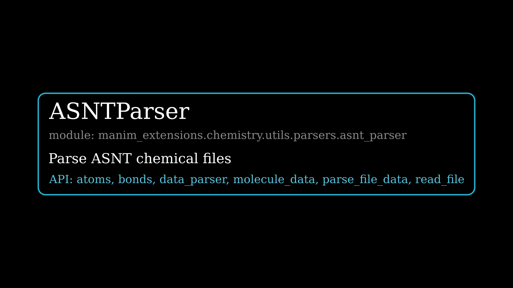
from manim import * from manim_extensions.chemistry.utils.parsers.asnt_parser import ASNTParser ASNTParserTarget = ASNTParser class ASNTParserOverview(Scene): def construct(self): public = [n for n in dir(ASNTParserTarget) if not n.startswith("_")] card = VGroup( Text('ASNTParser', font_size=36), Text('module: manim_extensions.chemistry.utils.parsers.asnt_parser', font_size=18, color=GREY), Text('Parse ASNT chemical files', font_size=22), Text("API: " + ", ".join(public[:6]), font_size=18, color=BLUE), ).arrange(DOWN, aligned_edge=LEFT, buff=0.25) card.scale_to_fit_width(11.5).move_to(ORIGIN) frame = RoundedRectangle( width=12.1, height=card.height + 0.5, corner_radius=0.2, color=BLUE_D ).move_to(card) self.add(frame, card)
In [1]:
from pprint import pprint parsed_asnt = ASNTParser(filename="acetone_2d.asnt") pprint(parsed_asnt.atoms_data)
Out[1]:
{1: {'coords': array([2, 2, 0]), 'element': 'C'}, 2: {'coords': array([2, 2, 0]), 'element': 'O'}}In [2]:
pprint(parsed_asnt.bonds_data)
Out[2]:
{0: {'bond_type': 1, 'from_atom_index': 1, 'to_atom_index': 2}, 1: {'bond_type': 1, 'from_atom_index': 2, 'to_atom_index': 1}}- static replace_stuff(line)[source]¶
Makes replacements of strings given the shitty structure of this format.
- static data_parser(data)[source]¶
Parses the atoms and bonds data and returns a tuple of dictionaries with each data.
The atom data follows the structure:
{<atom_index>: {"element": <atom_element>, "position": [<x_pos>, <y_pos>, <z_pos>]}}
The bond data follows the structure:
{<bond_index>: {"from_atom_index": <from_atom_index>, "to_atom_index": <to_atom_index>, "bond_type": <bond_type>}}
- Parameters:
data (
Any) – Lines of the ASNT file as returned byread_file().- Return type:
- Returns:
(atoms_data, bonds_data)tuple of dictionaries.
- class manim_extensions.chemistry.BaseMBondObject(from_atom, to_atom, type=0, subtype=None, color=WHITE, index=0, **kwargs)[source]¶
Abstract base class for 2D chemical bond mobjects between two atoms.
- Parameters:
from_atom (
MAtomObject) – Atom at the start of the bond.to_atom (
MAtomObject) – Atom at the end of the bond.type (
int) – Bond type: 1 for single, 2 for double, 3 for triple.subtype (
Optional[Literal['complete','skeleton','over_bond']]) – Representation of the bonded atoms; seedefine_subtype()for how it maps to the rendered line style.color (
ManimColor|str) – Color of the bond.index (
int) – Index of the bond in the molecule.**kwargs (
Any) – Additional keyword arguments forwarded toVGroup.
Examples
Example: BaseMBondObjectScene ¶

import numpy as np from manim import * from manim_extensions.chemistry.twoD.atom import MAtomObject from manim_extensions.chemistry.twoD.bond import BaseMBondObject, SimpleBond class BaseMBondObjectScene(Scene): def construct(self): # BaseMBondObject is abstract: create_line() must be # implemented by subclasses such as SimpleBond. carbon = MAtomObject(element="C") oxygen = MAtomObject(element="O", coords=np.array([1.6, 0, 0])) bond = SimpleBond(carbon, oxygen) assert isinstance(bond, BaseMBondObject) content = VGroup(carbon, oxygen, bond) content.scale_to_fit_width(6).move_to(ORIGIN) self.add(content)
- __str__()[source]¶
Return a description of the bonded atoms.
- Return type:
- Returns:
A human-readable description of the two bonded atoms.
- __repr__()[source]¶
Return the same description as
__str__.- Return type:
- Returns:
A human-readable description of the two bonded atoms.
- define_subtype(subtype)[source]¶
Defines the subtype based on atoms’ representations.
Input options:
'complete'Both atoms show their element symbol.
'skeleton'One or both atoms hide their symbol.
'over_bond'A symbol is drawn above the bond.
Output options:
'shorter'Does not touch the center of the atoms.
'shorter_from'Does not touch the center of the from atom.
'shorter_to'Does not touch the center of the to atom.
NoneorFalseTouches both atoms’ centers.
- Parameters:
subtype (
Optional[Literal['complete','skeleton','over_bond']]) – Representation of the bonded atoms; the rendered line style is derived from it together with the atoms’ representations.- Return type:
- Returns:
The subtype name for a shortened bond, or a false result when the line touches both atom centers.
- atoms_in_bond()[source]¶
Return a tuple of the two atoms connected by this bond.
- Return type:
- Returns:
A tuple of the results.
- atom_is_in_bond(atom)[source]¶
Return True if the given atom is one of the two atoms in this bond.
- Parameters:
atom (
MAtomObject) – Atom to check for membership in the bond.- Return type:
- Returns:
Whether the operation succeeded.
Noneif there is no result.
- get_bond_index_by_atom(atom)[source]¶
Return the bond’s index if the atom is part of this bond, otherwise None.
- Parameters:
atom (
MAtomObject) – Atom to check for membership in the bond.- Return type:
- Returns:
The bond’s index when the atom is part of it, otherwise
None.
- add_bond_index_by_atom_to_list(atom, list)[source]¶
Append this bond’s index to the given list if the atom is in the bond.
- Parameters:
atom (
MAtomObject) – Atom to check for membership in the bond.
- Return type:
- Returns:
The updated list of bond indices.
- get_perpendicular_unit_vector(point_a, point_b)[source]¶
Return a unit vector perpendicular to the bond direction, in the xy plane.
- no_subtype()[source]¶
Provide the geometry used when no bond subtype is selected.
Bond subclasses override this hook and return their concrete mobject.
- Parameters:
direction – Direction from the from-atom to the to-atom; derived from the atoms when omitted.
- Return type:
- Returns:
The resulting value.
- shorter_subtype()[source]¶
Provide the geometry used when the bond is drawn shorter on both ends.
Bond subclasses override this hook and return their concrete mobject.
- Parameters:
direction – Direction from the from-atom to the to-atom; derived from the atoms when omitted.
- Return type:
- Returns:
The resulting value.
- shorter_from_subtype(direction=None)[source]¶
Provide the geometry used when the bond is shortened at the from-atom end.
Bond subclasses override this hook and return their concrete mobject.
- shorter_to_subtype(direction=None)[source]¶
Provide the geometry used when the bond is shortened at the to-atom end.
Bond subclasses override this hook and return their concrete mobject.
- longer_subtype()[source]¶
Provide the geometry used when the bond is drawn longer.
Bond subclasses override this hook and return their concrete mobject.
- Parameters:
direction – Direction from the from-atom to the to-atom; derived from the atoms when omitted.
- Return type:
- Returns:
The resulting value.
- create_line()[source]¶
Assemble the bond’s line components for the selected subtype.
Bond subclasses override this hook and return their concrete mobject.
- Parameters:
direction – Direction from the from-atom to the to-atom; derived from the atoms when omitted.
- Return type:
- Returns:
The resulting value.
- class manim_extensions.chemistry.BohrAtom(e=14, p=14, n=10, level=None, orbit_color=WHITE, electron_color=BLUE, proton_color=RED, neutron_color=WHITE, **kwargs)[source]¶
Creates a Bohr like diagram.
- Parameters:
e (
int) – Number of electrons of the atom.p (
int) – Number of protons of the atom.n (
int) – Number of neutrons of the atom.level (
int|None) – Number of orbit levels. IfNone, it is calculated from the number of electrons.orbit_color (
ManimColor) – Color of the orbit circles.electron_color (
ManimColor) – Color of the electron dots.proton_color (
ManimColor) – Color of the proton dots.neutron_color (
ManimColor) – Color of the neutron dots.**kwargs (
Any) – Additional keyword arguments passed toVGroup.
Examples
Example: BohrAtomScene ¶
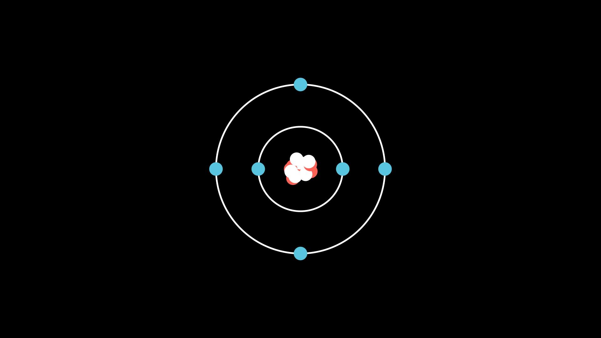
from manim import * from manim_extensions.chemistry import BohrAtom class BohrAtomScene(Scene): def construct(self): atom = BohrAtom(e=6, p=6, n=6) self.add(atom.get_orbitals()) self.add(atom.get_nuclei()) self.add(atom.get_electrons())
- calculate_levels()[source]¶
Calculate how many orbital levels are needed to hold all electrons.
- Return type:
- Returns:
The number of orbital levels needed to hold all electrons.
- nuclei_groups()[source]¶
Return a
VGroupof randomly positioned proton and neutron dots forming the nucleus.
- electrons_group()[source]¶
Return a
VGroupof electrons distributed across orbital levels according to Bohr model rules.
- arrange_electrons(n_electrons, level)[source]¶
Evenly arrange n_electrons around a circular orbit at the given energy level radius.
- get_orbitals()[source]¶
Return the orbitals VGroup (first child of the atom group).
- Return type:
- Returns:
The orbitals VGroup (first child of the atom group).
- class manim_extensions.chemistry.ChemicalFormula(formula, metal_color=WHITE, non_metal_color=WHITE, oxygen_color=WHITE, *args, **kwargs)[source]¶
Mostly useful for simple compounds like binary salts or oxoanions.
- Parameters:
formula (
str) – The chemical formula to render, e.g."H2O".metal_color (
ManimColor|str) – Color of the metal element.non_metal_color (
ManimColor|str) – Color of the non-metal element.oxygen_color (
ManimColor|str) – Color of the oxygen element.args (
Any) – Additional positional arguments passed toMarkupText.**kwargs (
Any) – Additional keyword arguments passed toMarkupText.
Examples
Example: ChemicalFormulaScene ¶
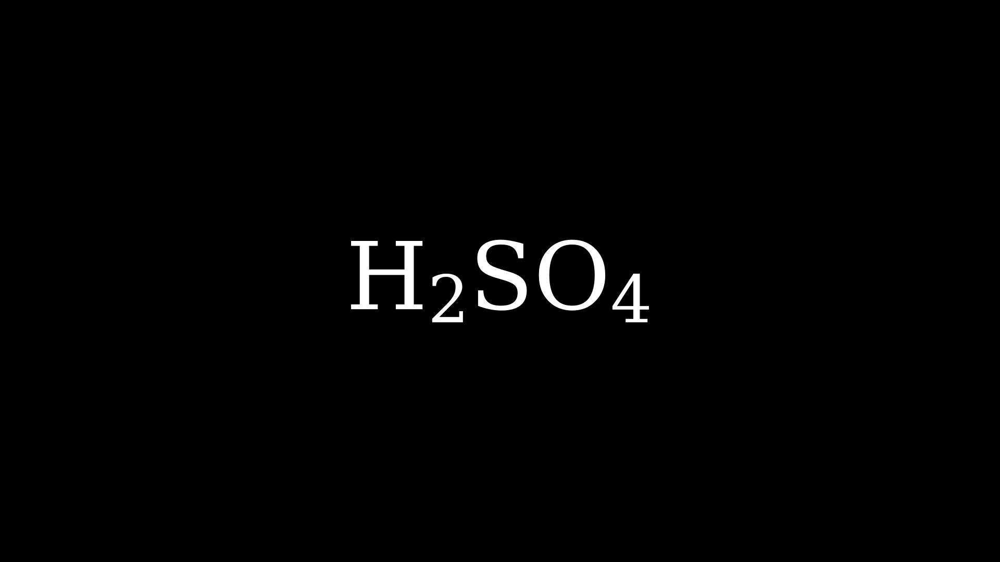
from manim import * from manim_extensions.chemistry.twoD.chemical_formula import ChemicalFormula class ChemicalFormulaScene(Scene): def construct(self): formula = ChemicalFormula("H2SO4").scale(2) self.add(formula)
- parse_formula(formula)[source]¶
Parse a formula string into a dict mapping element symbols to their counts.
- make_markup(parsed_formula, metal_color=WHITE, non_metal_color=WHITE, oxygen_color=WHITE)[source]¶
Build Pango markup string with colored elements and subscripted counts.
- Parameters:
parsed_formula (
dict[str,int]) – Parsed formula mapping element symbols to their counts.metal_color (
ManimColor|str) – Color of the metal element.non_metal_color (
ManimColor|str) – Color of the non-metal element.oxygen_color (
ManimColor|str) – Color of the oxygen element.
- Return type:
- Returns:
The resulting string.
- set_atom_color(atom, subindex, color)[source]¶
Wrap an atom symbol and its subscript count in a colored span tag.
- Parameters:
atom (
str) – Element symbol of the atom.subindex (
int) – Subscript count of the atom.color (
ManimColor|str) – Color of the atom text.
- Return type:
- Returns:
The resulting string.
- class manim_extensions.chemistry.ComplexFormula(formula_dict, *args, **kwargs)[source]¶
Allows the creation of more complex molecular formulas using a dictionary. The key is the string to be written and the value is a color.
- Parameters:
formula_dict (
dict[Any,Any]) – Dictionary mapping formula strings to their colors.args (
Any) – Additional positional arguments passed toMarkupText.**kwargs (
Any) – Additional keyword arguments passed toMarkupText.
Examples
Example: ComplexFormulaScene ¶
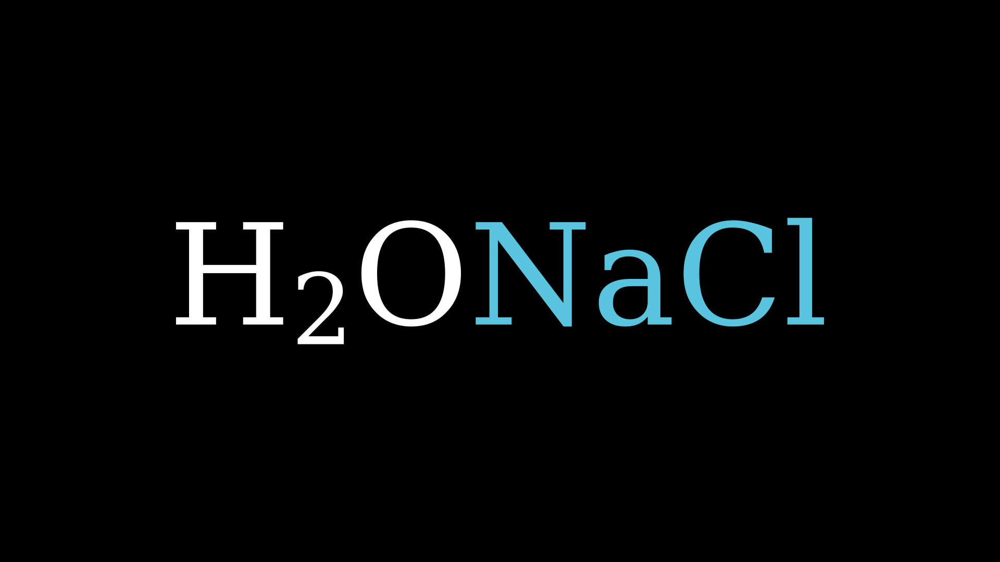
from manim import * from manim_extensions.chemistry.twoD.chemical_formula import ComplexFormula class ComplexFormulaScene(Scene): def construct(self): formula = ComplexFormula({"H2O": WHITE, "NaCl": BLUE}).scale(3.0) self.add(formula)
- add_tags_around_numbers(formula_part)[source]¶
Wrap trailing numbers in formula parts with HTML subscript tags.
- class manim_extensions.chemistry.DoubleBond(from_atom, to_atom, side=0, distance=0.15, double_bond_scale=0.7, **kwargs)[source]¶
A double bond between two atoms.
- Parameters:
from_atom (
MAtomObject) – The atom the bond starts from.to_atom (
MAtomObject) – The atom the bond ends at.side (
int) – Side of the double bond line.distance (
float) – Distance between the two lines of the bond.double_bond_scale (
float) – Scale applied to the secondary line of the bond.**kwargs (
Any) – Additional keyword arguments passed toBaseMBondObject.
Examples
Example: DoubleBondScene ¶
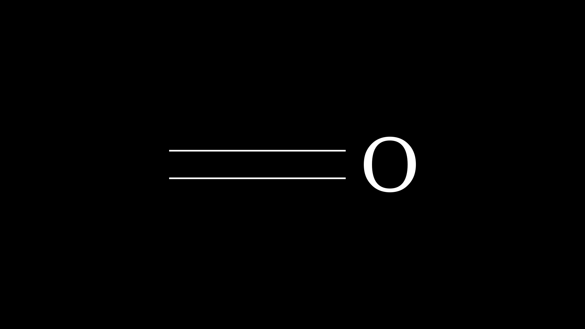
import numpy as np from manim import * from manim_extensions.chemistry.twoD.atom import MAtomObject from manim_extensions.chemistry.twoD.bond import DoubleBond class DoubleBondScene(Scene): def construct(self): carbon = MAtomObject(element="C") oxygen = MAtomObject(element="O", coords=np.array([1.6, 0, 0])) content = VGroup(carbon, oxygen, DoubleBond(carbon, oxygen)) content.scale_to_fit_width(6).move_to(ORIGIN) self.add(content)
- shorter_subtype()[source]¶
Return two parallel shortened lines offset perpendicularly from the bond axis.
- shorter_from_subtype(direction=None, from_surroundings=False, to_surroundings=False)[source]¶
Return a double bond shortened at the from-atom end, with surroundings-aware layout.
- Parameters:
- Return type:
- Returns:
A
VGroupinstance representing the result.
- shorter_to_subtype(direction=None, from_surroundings=False, to_surroundings=False)[source]¶
Return a double bond shortened at the to-atom end, with surroundings-aware layout.
- Parameters:
- Return type:
- Returns:
A
VGroupinstance representing the result.
- get_vector()[source]¶
This contains a VGroup with two lines, we just get the vector from one of them.
- get_surroundings()[source]¶
Checks the number of bonds of C atoms.
Returns False if the C has a structure like central C in acetone:
Not bonded to H atoms.
Double bond to at least another atom.
Otherwise returns True, resulting in a structure like the C with double bond to imidazole.
TODO: Refactor this to make it more logical and way less verbose.
- class manim_extensions.chemistry.Element(symbol='H', name='H', atomic_number=1, mass=1.008, color='#FFFFFF')[source]¶
Chemical element data.
- Parameters:
Examples
Example: ElementOverview ¶
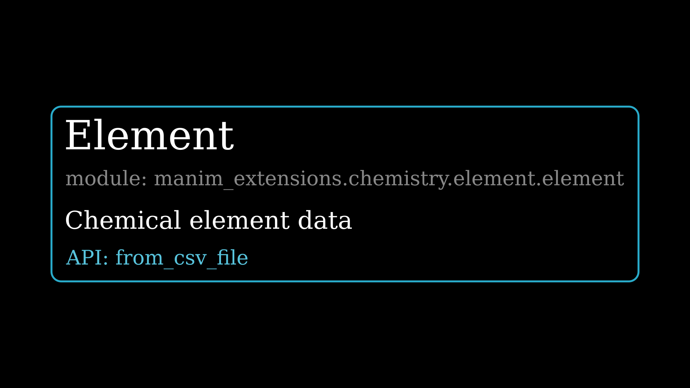
from manim import * from manim_extensions.chemistry.element.element import Element ElementTarget = Element class ElementOverview(Scene): def construct(self): public = [n for n in dir(ElementTarget) if not n.startswith("_")] card = VGroup( Text('Element', font_size=36), Text('module: manim_extensions.chemistry.element.element', font_size=18, color=GREY), Text('Chemical element data', font_size=22), Text("API: " + ", ".join(public[:6]), font_size=18, color=BLUE), ).arrange(DOWN, aligned_edge=LEFT, buff=0.25) card.scale_to_fit_width(11.5).move_to(ORIGIN) frame = RoundedRectangle( width=12.1, height=card.height + 0.5, corner_radius=0.2, color=BLUE_D ).move_to(card) self.add(frame, card)
from manim_extensions.chemistry.element.element import Element hydrogen = Element("H", "Hydrogen", 1, 1.008, "#ffffff")
- __repr__()[source]¶
Return a readable representation of the element.
- Return type:
- Returns:
Text identifying the element.
- static from_csv_file(filename, element)[source]¶
Create an
Elementfrom a CSV file.
- class manim_extensions.chemistry.FileHandler(file_path)[source]¶
Handles the parsing of chemistry files selecting the right parser.
Examples
Example: FileHandlerOverview ¶
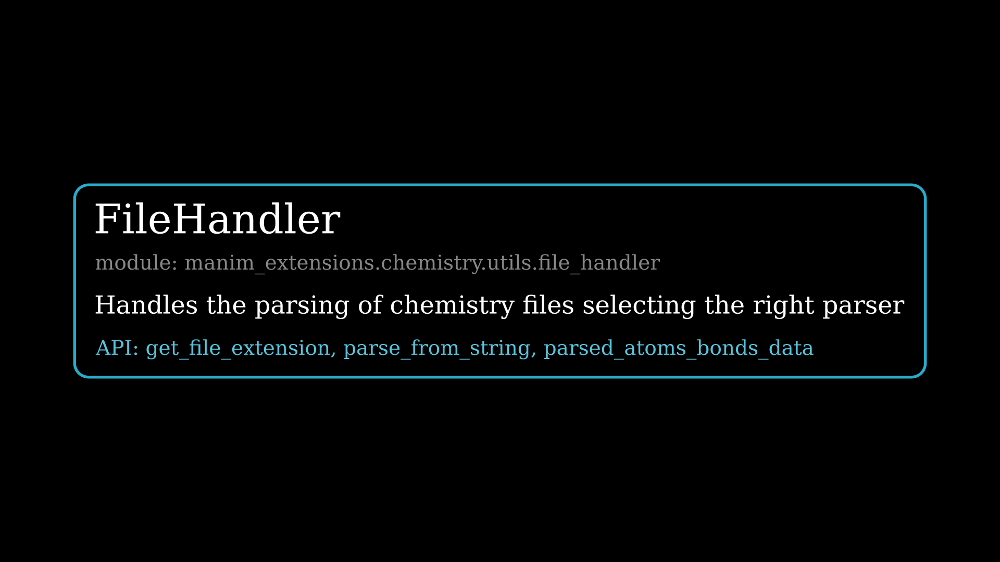
from manim import * from manim_extensions.chemistry.utils.file_handler import FileHandler FileHandlerTarget = FileHandler class FileHandlerOverview(Scene): def construct(self): public = [n for n in dir(FileHandlerTarget) if not n.startswith("_")] card = VGroup( Text('FileHandler', font_size=36), Text('module: manim_extensions.chemistry.utils.file_handler', font_size=18, color=GREY), Text('Handles the parsing of chemistry files selecting the right parser', font_size=22), Text("API: " + ", ".join(public[:6]), font_size=18, color=BLUE), ).arrange(DOWN, aligned_edge=LEFT, buff=0.25) card.scale_to_fit_width(11.5).move_to(ORIGIN) frame = RoundedRectangle( width=12.1, height=card.height + 0.5, corner_radius=0.2, color=BLUE_D ).move_to(card) self.add(frame, card)
from manim_extensions.chemistry.utils.file_handler import FileHandler handler = FileHandler("molecule.mol") atoms, bonds = handler.parser.parse()
- static get_file_extension(file_path)[source]¶
Return the lowercase file extension without the leading dot.
- parsed_atoms_bonds_data()[source]¶
Return the parsed atom and bond dictionaries.
- Return type:
- Returns:
(atoms_dict, bonds_dict)parsed by the selected parser.
- static parse_from_string(string, format)[source]¶
Parse molecule data directly from a string using the given format.
- Parameters:
string (
str) – Raw molecule data as a string (e.g. the contents of a .mol file).format (
Literal['mol','sdf','asnt','json','xml']) – Format identifier matching a key inSUPPORTED_FORMATS.
- Return type:
- Returns:
Parsed
(atoms, bonds)tuple (or list of tuples for multi-molecule formats).- Raises:
IncorrectFormat – If
formatis not a supported format.
- class manim_extensions.chemistry.GMAnimationBuilder(molecule, atoms=None, bonds=None)[source]¶
Builds animations for a
GraphMolecule.- Parameters:
molecule (
GraphMolecule) – The molecule the animations are built for.
Examples
Example: GMAnimationBuilderScene ¶
from manim import * from manim_extensions.chemistry import GMAnimationBuilder, GraphMolecule class GMAnimationBuilderScene(Scene): def construct(self): molecule = GraphMolecule.molecule_from_file( "dimethylpropane.mol", label=True, numeric_label=True, ignore_hydrogens=False, ) atoms_and_bonds = molecule.get_connected_atoms_and_bonds(1, 3) animation_builder = GMAnimationBuilder( molecule=molecule, atoms=atoms_and_bonds[0], bonds=atoms_and_bonds[1], ) self.play(Write(molecule)) self.play(animation_builder.rotate_atoms_about_bond(1, 3)) self.wait() self.play( animation_builder.change_color( atoms_color=BLUE, bonds_color=RED, label_color=PINK ) ) self.wait()
- bonds_from_atoms(atom_a, atom_b)[source]¶
Find and return the bond edge connecting two atom indices in the molecule.
- rotate_atoms_about_bond(atom_a, atom_b, angle=PI / 4)[source]¶
Return animations rotating atoms around the bond axis between atom_a and atom_b.
- change_color(atoms_color=BLACK, bonds_color=None, label_color=None)[source]¶
Return color-change animations for atoms, bonds and optionally atom labels.
- Parameters:
atoms_color (
ManimColor) – New color of the atoms.bonds_color (
ManimColor|None) – New color of the bonds. IfNone, bonds keep their color.label_color (
ManimColor|None) – New color of the atom labels. IfNone, labels keep their color.
- Return type:
- Returns:
A list of the results.
- dataclass manim_extensions.chemistry.GenericElement(symbol, name, atomic_number, mass, cpk_color)[source]¶
Data for a chemical element (symbol, name, atomic number, mass, CPK color).
Examples
Example: GenericElementOverview ¶
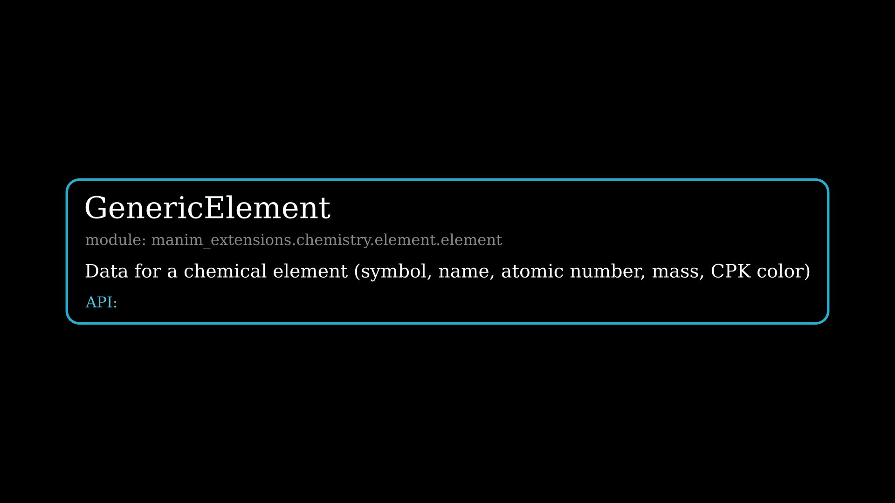
from manim import * from manim_extensions.chemistry.element.element import GenericElement GenericElementTarget = GenericElement class GenericElementOverview(Scene): def construct(self): public = [n for n in dir(GenericElementTarget) if not n.startswith("_")] card = VGroup( Text('GenericElement', font_size=36), Text('module: manim_extensions.chemistry.element.element', font_size=18, color=GREY), Text('Data for a chemical element (symbol, name, atomic number, mass, CPK color)', font_size=22), Text("API: " + ", ".join(public[:6]), font_size=18, color=BLUE), ).arrange(DOWN, aligned_edge=LEFT, buff=0.25) card.scale_to_fit_width(11.5).move_to(ORIGIN) frame = RoundedRectangle( width=12.1, height=card.height + 0.5, corner_radius=0.2, color=BLUE_D ).move_to(card) self.add(frame, card)
from manim_extensions.chemistry.element.element import C print(C.symbol, C.name, C.atomic_number)
- class manim_extensions.chemistry.GraphMolecule(vertices_dict, edges_dict, label=False, numeric_label=False, label_color=BLACK, *args, **kwargs)[source]¶
Represents a molecule like a
Graphfrom Manim.- Parameters:
vertices_dict (
dict[Any,Any]) – Dictionary mapping vertex indices toMCAtomobjects.edges_dict (
dict[Any,Any]) – Dictionary mapping edge tuples toMCBondobjects.label (
bool) – Whether to add a label with the element symbol to each atom.numeric_label (
bool) – Whether to add a numeric label to each atom.label_color (
ManimColor) – Color of the atom labels.args (
Any) – Additional positional arguments passed toGraph.**kwargs (
Any) – Additional keyword arguments passed toGraph.
Attributes
- SUPPORTED_BOND_TYPES: dict[int, type[Line] | type[ArcBetweenPoints]] = {1: <class 'manim_extensions.chemistry.twoD.graph_molecule.SimpleLine'>, 2: <class 'manim_extensions.chemistry.twoD.graph_molecule.DoubleLine'>, 3: <class 'manim_extensions.chemistry.twoD.graph_molecule.TripleLine'>}¶
Bond order to line mobject mapping used when parsing molecules.
Examples
Example: GraphMoleculeFromFile ¶
from manim import * from manim_extensions.chemistry import GraphMolecule class GraphMoleculeFromFile(Scene): def construct(self): molecule = GraphMolecule.molecule_from_file("acetone_2d.mol") molecule.scale(1.5) self.play(Write(molecule)) carbons = molecule.get_connected_atoms_v_group(1, 2) self.play(Indicate(carbons)) self.wait()
Example: GraphMoleculeFromFileWithHydrogens ¶
from manim import * from manim_extensions.chemistry import GraphMolecule class GraphMoleculeFromFileWithHydrogens(Scene): def construct(self): without_h = GraphMolecule.molecule_from_file("acetone_2d.mol") with_h = GraphMolecule.molecule_from_file( "acetone_2d.mol", ignore_hydrogens=False ) self.play(Write(without_h)) self.play(Write(with_h)) hydrogens = VGroup( *[with_h.vertices[index] for index in range(5, 11)] ) self.play(Indicate(hydrogens)) self.wait()
Example: GraphMoleculeFromString ¶
from manim import * from pathlib import Path from manim_extensions.chemistry import GraphMolecule class GraphMoleculeFromString(Scene): def construct(self): molecule = GraphMolecule.molecule_from_string(Path("acetone_2d.mol").read_text(), format="mol") self.play(Write(molecule)) self.play(Indicate(molecule.vertices[2])) self.wait() content = Group(*self.mobjects) content.scale_to_fit_height(4.5).move_to(ORIGIN)
Example: GraphMoleculeFromStringThreeD ¶
from manim import * from pathlib import Path from manim_extensions.chemistry import GraphMolecule class GraphMoleculeFromStringThreeD(ThreeDScene): def construct(self): self.set_camera_orientation(PI / 3, -PI / 4) molecule = GraphMolecule.molecule_from_string( Path("acetone_2d.mol").read_text(), format="mol", ignore_hydrogens=False ) molecule.scale(3.4) self.play(Write(molecule)) self.play(Rotate(molecule, PI / 2, axis=RIGHT)) self.wait()
- select_bond_from_edge(edge)[source]¶
Return the bond class for a given edge tuple based on its bond type.
- select_bond_type(bond_type)[source]¶
Return the bond mobject class for the given bond order (1=single, 2=double, 3=triple).
- make_layout(vertices_dict)[source]¶
Build a layout dict mapping each atom index to its 3D coordinates.
- make_vertex_config(vertices_dict)[source]¶
Build a vertex config dict with element colors and dot radius.
- make_edge_config(edges)[source]¶
Build an edge config dict with gradient colors derived from bonded atom colors.
- make_labels(vertices_dict, numeric_label, label_color)[source]¶
Create label text mobjects for each atom, either numeric or element symbols.
- Parameters:
vertices_dict (
dict[Any,Any]) – Dictionary mapping vertex indices to their atoms.numeric_label (
bool) – Whether to add a numeric label to each atom.label_color (
ManimColor) – Color of the atom labels.
- Return type:
- Returns:
The label text mobjects for each atom, either numeric or element symbols.
- depth_first_search(graph, atom, visited_atoms, connected_atoms)[source]¶
Recursive depht-first search to find connected atoms.
Warning
Only works properly for non cyclic structures. If you use an atom from a cycle as the starting point, it will take the whole cycle.
- Parameters:
- Return type:
- Returns:
List of the connected atom indices.
- get_connected_atoms(from_atom_index, to_atom_index)[source]¶
Given two atoms index, returns the connected atoms to the second atom after the bond between the first atom and the second one.
- Parameters:
- Return type:
- Returns:
List of the connected atom indices.
- Raises:
Exception – Raised when there is no bond between
from_atom_indexandto_atom_index.
Examples
Index:
0 1 2 3 4 5Atoms:
C-O-C-N-C-HThis function applied to atoms
2(C) and3(N), would return[3, 4, 5], the indices of atoms N, C and H.
- get_atoms_vgroup_from_index(atoms_indices)[source]¶
Return a
VGroupof vertex mobjects for the given atom indices.
- get_connected_atoms_v_group(from_atom_index, to_atom_index)[source]¶
Return a VGroup of all atoms connected to to_atom_index beyond the bond from from_atom_index.
- get_bonds_from_atoms_indices(connected_atoms, excluded_atom=0)[source]¶
Given a list of atoms, returns the bonds related to those atoms.
- get_bonds_vgroup_from_index(connected_atoms, excluded_atom)[source]¶
Return a
VGroupof bond mobjects connected to the given atoms, excluding one.
- get_connected_atoms_and_bonds_group_from_index(connected_atoms, excluded_atom=0)[source]¶
Return a combined VGroup of connected atoms and their bonds, excluding one atom.
- get_connected_atoms_and_bonds(from_atom, to_atom)[source]¶
Return a
VGroupof all atoms and bonds on the to_atom side of a given bond.
- find_atom_position_by_index(atom_index)[source]¶
Returns the position of a single atom given its index.
- Parameters:
- Return type:
- Returns:
Arraywith the [x, y, z] coordinates of the atom.- Raises:
Examples
In [3]:
molecule = GraphMolecule.molecule_from_file("dimethylpropane.mol") print(molecule.find_atom_position_by_index(1))
Out[3]:
[ 0.2253 -0.0829 0.28435]
- find_atoms_position_by_index(atoms_index_list)[source]¶
Returns the position of multiple atoms given their indices.
- Parameters:
atoms_index_list (
list[Any]) – List of atoms indices to be gotten.- Return type:
- Returns:
List of the atoms positions.
Examples
In [4]:
from pprint import pprint molecule = GraphMolecule.molecule_from_file("dimethylpropane.mol") pprint(molecule.find_atoms_position_by_index([1,2,3]))
Out[4]:
[array([ 0.2253 , -0.0829 , 0.28435]), array([-1.1214 , 0.2898 , 0.92075]), array([1.1214 , 1.162 , 0.21665])]
- find_bond_center_by_index(bond_index)[source]¶
Returns the [x, y, z] coordinates of a bond given a bond tuple. The bond tuple corresponds to the indices of the atoms in the bond.
- Parameters:
- Return type:
- Returns:
[x, y, z] coordinates of bond center.
- Raises:
Examples
In [5]:
molecule = GraphMolecule.molecule_from_file("dimethylpropane.mol") print(molecule.find_bond_center_by_index((2, 1)))
Out[5]:
[-0.44805 0.10345 0.60255]
- find_position_along_bond_axis(bond_tuple, position_buff)[source]¶
Returns a position along the bond axis given a bond index and depending on a position_buff. A value of 1 will return one end of the bond. A value of -1 will return the other end. All values in between return positions at some point of the middle of the bond, being 0 the center. Values bigger or lower that 1 and -1 will return positions outside the bond.
- find_bonds_center_by_index(bonds_tuples_list)[source]¶
Returns the position of multiple bonds given their indices.
- Parameters:
bonds_tuples_list (
list[Any]) – List of bonds indices to be gotten.- Return type:
- Returns:
List of the bonds positions.
Examples
In [6]:
from pprint import pprint molecule = GraphMolecule.molecule_from_file("dimethylpropane.mol") pprint( molecule.find_bonds_center_by_index([(2, 1), (3, 1), (4, 1)]) )
Out[6]:
[array([-0.44805, 0.10345, 0.60255]), array([0.67335, 0.53955, 0.2505 ]), array([ 0.10735, -0.35215, -0.4248 ])]
- classmethod mc_molecule_to_atoms_and_bonds(mc_molecule)[source]¶
Transforms the structure of a mc_molecule to a (vertices, edges) tuple.
The tuple has the following structure:
Vertices: {<atom_index>: MCAtom} Edges: {(<from_atom_index>, <to_atom_index>): MCBond}- Parameters:
mc_molecule (
MCMolecule) – The originMCMolecule.- Return type:
- Returns:
See above.
- class manim_extensions.chemistry.JSONParser(filename)[source]¶
Parses JSON files.
Examples
Example: JSONParserOverview ¶
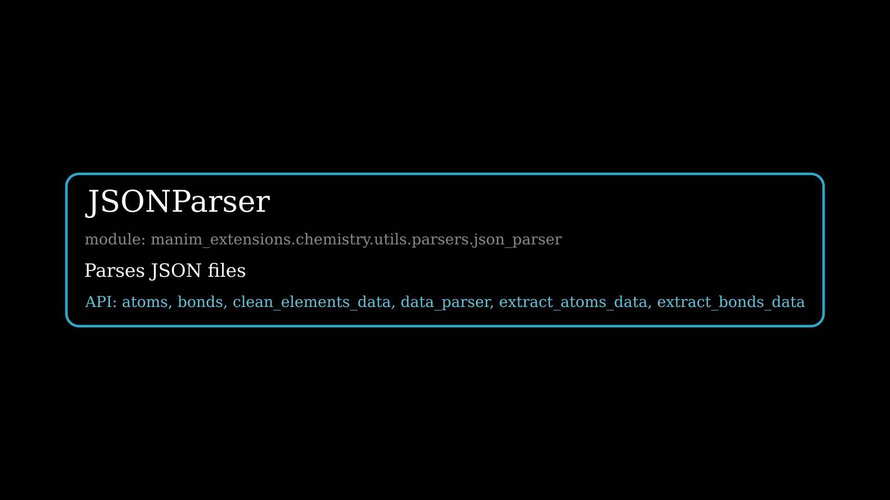
from manim import * from manim_extensions.chemistry.utils.parsers.json_parser import JSONParser JSONParserTarget = JSONParser class JSONParserOverview(Scene): def construct(self): public = [n for n in dir(JSONParserTarget) if not n.startswith("_")] card = VGroup( Text('JSONParser', font_size=36), Text('module: manim_extensions.chemistry.utils.parsers.json_parser', font_size=18, color=GREY), Text('Parses JSON files', font_size=22), Text("API: " + ", ".join(public[:6]), font_size=18, color=BLUE), ).arrange(DOWN, aligned_edge=LEFT, buff=0.25) card.scale_to_fit_width(11.5).move_to(ORIGIN) frame = RoundedRectangle( width=12.1, height=card.height + 0.5, corner_radius=0.2, color=BLUE_D ).move_to(card) self.add(frame, card)
In [7]:
from pprint import pprint parsed_json = JSONParser(filename="acetone_2d.json") pprint(parsed_json.molecular_data[0][0])
Out[7]:
{1: {'coords': array([0., 0., 0.]), 'element': 'C'}, 2: {'coords': array([1.2, 0.4, 0.3]), 'element': 'O'}}In [8]:
pprint(parsed_json.molecular_data[0][1])
Out[8]:
{0: {'bond_type': 2, 'from_atom_index': 1, 'to_atom_index': 2}}- static data_parser(data)[source]¶
Parses the atoms and bonds data and returns a tuple of dictionaries with each data.
The Json format usually follows the structure:
{ <Origin of the file>: [ { <Molecule data> } ] }.
The atom data follows the structure:
{<atom_index>: {"element": <atom_element>, "position": [<x_pos>, <y_pos>, <z_pos>]}}
The bond data follows the structure:
{<bond_index>: {"from_atom_index": <from_atom_index>, "to_atom_index": <to_atom_index>, "bond_type": <bond_type>}}
- Parameters:
data (
str) – String with the JSON file data as returned byread_file().- Return type:
- Returns:
List of
(atoms_data, bonds_data)tuples, one per molecule.
- static parse_single_molecule_data(molecule_data)[source]¶
Parse a single molecule entry into atoms and bonds dicts.
- static extract_atoms_data(molecule_data)[source]¶
Extract the atoms data from a single molecule entry.
- class manim_extensions.chemistry.MAtomObject(coords=np.array([0, 0, 0]), element='H', explicit_carbons=False, explicit_hydrogens=False, bond_to={}, representation_type=None, color=WHITE, charge=0, index=0, planar=True, **kwargs)[source]¶
A 2D visual representation of an atom in a chemical molecule.
- Parameters:
coords (
Point3D) – Position of the atom.element (
str) – Chemical symbol of the element.explicit_carbons (
bool) – If True, carbon atoms display their element symbol.explicit_hydrogens (
bool) – If True, hydrogen atoms display their element symbol.bond_to (
dict[int,str]) – Mapping of bonded atom indices to their elements.representation_type (
Optional[Literal['complete','skeleton','over_bond']]) –Representation of the atom label.
'complete'Always show the element symbol.
'skeleton'Hide the element symbol.
'over_bond'Show the symbol above the bond.
When None it is inferred from the element.
color (
ManimColor|str) – Color of the atom label.charge (
int) – Formal charge of the atom.index (
int) – Index of the atom in the molecule.planar (
bool) – If True, forces the z coordinate ofcoordsto zero.**kwargs (
Any) – Additional keyword arguments forwarded toVGroup.
Examples
Example: MAtomObjectScene ¶
from manim import * from manim_extensions.chemistry.twoD.atom import MAtomObject class MAtomObjectScene(Scene): def construct(self): self.add(MAtomObject(element="O").scale(7))
- __str__()[source]¶
Return a description of the atom.
- Return type:
- Returns:
A human-readable description naming the atom’s element.
- __repr__()[source]¶
Return the same description as
__str__.- Return type:
- Returns:
A human-readable description naming the atom’s element.
- set_representation(representation_type)[source]¶
Determine the atom label representation from the requested type.
Input options:
'complete'Adds the element symbol.
'skeleton'Does not add the symbol.
'over_bond'Adds the symbol above the bond.
- add_atom()[source]¶
Adds an atom depending on the representation.
- Return type:
- Returns:
The created atom label, or
Nonewhen the representation has no label.
- bonds_fulfilled()[source]¶
Check if the atom has its expected minimum number of bonds.
- Return type:
- Returns:
Whether the operation succeeded.
- make_copy()[source]¶
Create a copy of this atom preserving all properties and coordinates.
- Return type:
- Returns:
A
MAtomObjectinstance representing the result.
- rename_atom(new_element, bonds_direction)[source]¶
Replace this atom’s element with new_element and adjust position by bond direction.
- Parameters:
- Return type:
- Returns:
The same atom after renaming.
- copy_with_explicit_hydrogens()[source]¶
Return a copy of this atom with explicit hydrogens enabled.
- Return type:
- Returns:
The copy of this atom with explicit hydrogens enabled.
- set_atom_color(color)[source]¶
TODO: Add the color depending on cpk convention
- Parameters:
color (
ManimColor) – New color of the atom.- Return type:
- Returns:
The resulting value.
- class manim_extensions.chemistry.MCAtom(element, coords=np.array([0, 0, 0]), atoms=None, bonds=None, molecule=None, molecule_index=None)[source]¶
Abstraction of an atom in a molecule.
- Parameters:
element (
MCElement) – The chemical element of the atom.coords (
Point3D) – 3D coordinates of the atom.bonds (
list[MCBond] |None) – List of bonds associated with the atom.molecule (
MCMolecule|None) – The molecule the atom belongs to.molecule_index (
int|None) – Index of the atom in the molecule.
Examples
Example: MCAtomOverview ¶
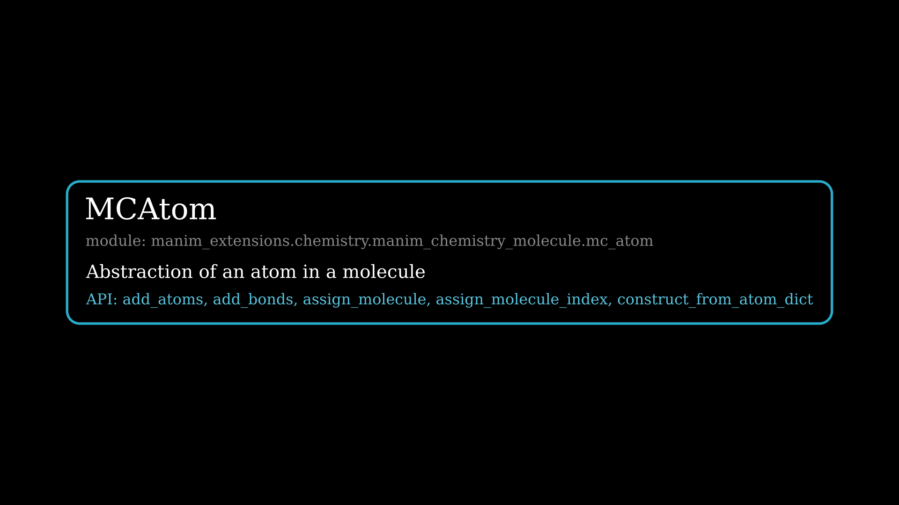
from manim import * from manim_extensions.chemistry.manim_chemistry_molecule.mc_atom import MCAtom MCAtomTarget = MCAtom class MCAtomOverview(Scene): def construct(self): public = [n for n in dir(MCAtomTarget) if not n.startswith("_")] card = VGroup( Text('MCAtom', font_size=36), Text('module: manim_extensions.chemistry.manim_chemistry_molecule.mc_atom', font_size=18, color=GREY), Text('Abstraction of an atom in a molecule', font_size=22), Text("API: " + ", ".join(public[:6]), font_size=18, color=BLUE), ).arrange(DOWN, aligned_edge=LEFT, buff=0.25) card.scale_to_fit_width(11.5).move_to(ORIGIN) frame = RoundedRectangle( width=12.1, height=card.height + 0.5, corner_radius=0.2, color=BLUE_D ).move_to(card) self.add(frame, card)
import numpy as np from manim_extensions.chemistry.manim_chemistry_molecule.mc_atom import MCAtom from manim_extensions.chemistry.manim_chemistry_molecule.mc_element import MC_ELEMENT_DICT atom = MCAtom(MC_ELEMENT_DICT["C"], coords=np.array([0.0, 0.0, 0.0]))
- assign_molecule(molecule)[source]¶
Set the parent
MCMoleculethis atom belongs to.- Parameters:
molecule (
MCMolecule) – The molecule the atom belongs to.- Return type:
- Returns:
The parent molecule this atom is assigned to.
- Raises:
Exception – Raised when
moleculeis not anMCMolecule.
- assign_molecule_index(molecule_index)[source]¶
Set the index of this atom within its parent molecule.
- static construct_from_atom_dict(atom_index, atom_data_dict, elements_data_dict)[source]¶
Given an atom data dict from a parser, returns an
MCAtom.- Parameters:
atom_dict – See data_parser function from
BaseParser.atom_index (
int) – Index of the atom in the molecule.atom_data_dict (
dict[Any,Any]) – See data_parser function fromBaseParser.elements_data_dict (
dict[Any,Any] |None) – Dictionary of custom element data to merge over the default elements data.
- Return type:
- Returns:
The constructed atom.
- Raises:
Exception – Raised when
atom_data_dictis not a dict, when it has noelemententry, when the element is unknown, or when the coordinates are not numeric.
- class manim_extensions.chemistry.MCBond(bond_type, from_atom=None, to_atom=None, stereo=None, molecule_index=None, topology=None, reacting_center_status=None)[source]¶
MCBond: Abstraction of a bond in a molecule: Type of bond, from and to atoms.- Parameters:
Examples
Example: MCBondOverview ¶
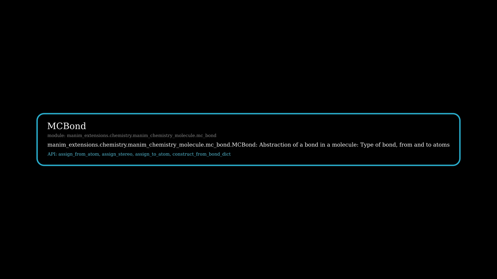
from manim import * from manim_extensions.chemistry.manim_chemistry_molecule.mc_bond import MCBond MCBondTarget = MCBond class MCBondOverview(Scene): def construct(self): public = [n for n in dir(MCBondTarget) if not n.startswith("_")] card = VGroup( Text('MCBond', font_size=36), Text('module: manim_extensions.chemistry.manim_chemistry_molecule.mc_bond', font_size=18, color=GREY), Text('manim_extensions.chemistry.manim_chemistry_molecule.mc_bond.MCBond: Abstraction of a bond in a molecule: Type of bond, from and to atoms', font_size=22), Text("API: " + ", ".join(public[:6]), font_size=18, color=BLUE), ).arrange(DOWN, aligned_edge=LEFT, buff=0.25) card.scale_to_fit_width(11.5).move_to(ORIGIN) frame = RoundedRectangle( width=12.1, height=card.height + 0.5, corner_radius=0.2, color=BLUE_D ).move_to(card) self.add(frame, card)
import numpy as np from manim_extensions.chemistry.manim_chemistry_molecule.mc_atom import MCAtom from manim_extensions.chemistry.manim_chemistry_molecule.mc_bond import MCBond from manim_extensions.chemistry.manim_chemistry_molecule.mc_element import MC_ELEMENT_DICT atom_a = MCAtom(MC_ELEMENT_DICT["C"], coords=np.array([0.0, 0.0, 0.0])) atom_b = MCAtom(MC_ELEMENT_DICT["O"], coords=np.array([1.0, 0.0, 0.0])) bond = MCBond(bond_type=1, from_atom=atom_a, to_atom=atom_b)
- static construct_from_bond_dict(bond_index, bond_data_dict, molecule)[source]¶
Given a bond data dict from a parser, returns an
MCBond.- Parameters:
bond_index (
int) – Index of the bond in the molecule.bond_data_dict (
dict[Any,Any]) – See data_parser function fromBaseParser.molecule (
MCMolecule) –MCMolecule: Required to get the atoms by their index and create theMCBondusingMCAtoms.
- Return type:
- Returns:
The constructed bond.
- Raises:
Exception – Raised when
bond_data_dictis not a dict, when it has noto_atom_indexorfrom_atom_indexentries, or when the bond type is unknown.
- dataclass manim_extensions.chemistry.MCElement(symbol=None, name=None, atomic_number=None, mass=None, color=None, cpk_color=None, jmol_color=None, pubchem_color=None)[source]¶
Used to abstract the properties of elements.
The properties can be overwritten using custom
MCElements and passing them as a dictionary to the molecule classes.Attributes
Examples
Example: OverwrittenCarbonElement ¶
from manim import * from pathlib import Path from manim_extensions.chemistry import GraphMolecule, MCElement class OverwrittenCarbonElement(Scene): def construct(self): default = GraphMolecule.molecule_from_string(Path("acetone_2d.mol").read_text(), format="mol") custom_carbon = MCElement(symbol="C", color=PURPLE) custom = GraphMolecule.molecule_from_string( Path("acetone_2d.mol").read_text(), format="mol", elements_data_dict={"C": custom_carbon}, ) molecules = VGroup(default, custom).arrange(RIGHT, buff=1.5) self.play(Write(molecules)) carbons = VGroup( custom.vertices[2], custom.vertices[3], custom.vertices[4] ) self.play(Indicate(carbons)) self.wait()
- class manim_extensions.chemistry.MCMolecule(atoms=None, bonds=None, name=None, elements=None)[source]¶
Abstraction of a molecule.
- Parameters:
Examples
Example: MCMoleculeOverview ¶
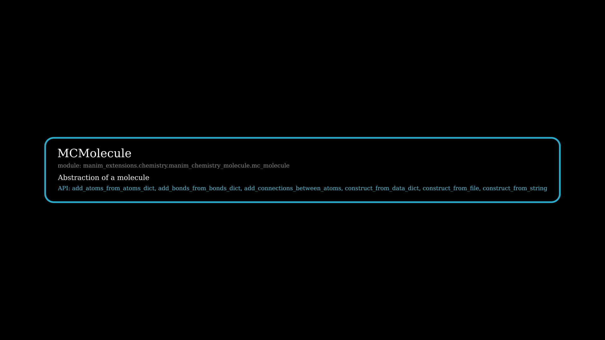
from manim import * from manim_extensions.chemistry.manim_chemistry_molecule.mc_molecule import MCMolecule MCMoleculeTarget = MCMolecule class MCMoleculeOverview(Scene): def construct(self): public = [n for n in dir(MCMoleculeTarget) if not n.startswith("_")] card = VGroup( Text('MCMolecule', font_size=36), Text('module: manim_extensions.chemistry.manim_chemistry_molecule.mc_molecule', font_size=18, color=GREY), Text('Abstraction of a molecule', font_size=22), Text("API: " + ", ".join(public[:6]), font_size=18, color=BLUE), ).arrange(DOWN, aligned_edge=LEFT, buff=0.25) card.scale_to_fit_width(11.5).move_to(ORIGIN) frame = RoundedRectangle( width=12.1, height=card.height + 0.5, corner_radius=0.2, color=BLUE_D ).move_to(card) self.add(frame, card)
import numpy as np from manim_extensions.chemistry.manim_chemistry_molecule.mc_atom import MCAtom from manim_extensions.chemistry.manim_chemistry_molecule.mc_bond import MCBond from manim_extensions.chemistry.manim_chemistry_molecule.mc_molecule import MCMolecule from manim_extensions.chemistry.manim_chemistry_molecule.mc_element import MC_ELEMENT_DICT atom_a = MCAtom(MC_ELEMENT_DICT["C"], coords=np.array([0.0, 0.0, 0.0])) atom_b = MCAtom(MC_ELEMENT_DICT["O"], coords=np.array([1.0, 0.0, 0.0])) bond = MCBond(bond_type=1, from_atom=atom_a, to_atom=atom_b) molecule = MCMolecule(atoms=[atom_a, atom_b], bonds=[bond], name="ethene")
- add_atoms_from_atoms_dict(atoms_dict, elements_data_dict)[source]¶
Uses the atoms dict returned by a parser to add the atoms to the molecule.
- Parameters:
- Return type:
- Returns:
The resulting value.
- Raises:
Exception – Raised when
atoms_dictis not a dict of atom data dicts.
- add_bonds_from_bonds_dict(bonds_dict)[source]¶
Uses the bonds dict returned by a parser to add the bonds to the molecule.
- static construct_from_data_dict(atoms_data_dict, bonds_data_dict, ignore_hydrogens=True, ignore_all_hydrogens=False, elements_data_dict=None)[source]¶
Given data with the format provided by a parser, constructs a
MCMolecule, the correspondingMCAtoms andMCBonds and stablishes the connections betweenMCAtoms and bonds.- Parameters:
- Return type:
- Returns:
A
MCMoleculeinstance representing the result.
- static construct_from_file(filepath, ignore_hydrogens=True, ignore_all_hydrogens=False, elements_data_dict=None)[source]¶
Returns an
MCMoleculegiven a file path.- Parameters:
- Return type:
- Returns:
The molecule constructed from the file.
- static construct_multiples_from_file(filepath, ignore_hydrogens=True, ignore_all_hydrogens=False, elements_data_dict=None)[source]¶
Similar to
construct_from_filebut returning a list ofMCMolecules.- Parameters:
filepath (
str) – Path to the molecule file.ignore_hydrogens (
bool) – Whether to remove hydrogens bonded to carbon atoms.ignore_all_hydrogens (
bool) – Whether to remove every hydrogen atom.elements_data_dict (
dict[Any,Any] |None) – Dictionary of custom element data to merge over the default elements data.
- Return type:
- Returns:
A list of the results.
- static construct_from_string(string, format='json', ignore_hydrogens=True, ignore_all_hydrogens=False, elements_data_dict=None)[source]¶
Reads a string and returns a molecule.
Supported formats are:
molMDL molfile.
sdfStructure-Data File.
asntASN.1 format.
jsonJSON format.
xmlXML format.
- Parameters:
string (
str) – String with the molecule data.format (
Literal['mol','sdf','asnt','json','xml']) – Format of the data.ignore_hydrogens (
bool) – Whether to remove hydrogens bonded to carbon atoms.ignore_all_hydrogens (
bool) – Whether to remove every hydrogen atom.elements_data_dict (
dict[Any,Any] |None) – Dictionary of custom element data to merge over the default elements data.
- Return type:
- Returns:
The molecule parsed from the string.
- static construct_multiples_from_string(string, format='json', ignore_hydrogens=True, ignore_all_hydrogens=False, elements_data_dict=None)[source]¶
Similar to
construct_from_stringbut returning a list ofMCMolecules.- Parameters:
string (
str) – String with the molecule data.format (
Literal['mol','sdf','asnt','json','xml']) – Format of the data.ignore_hydrogens (
bool) – Whether to remove hydrogens bonded to carbon atoms.ignore_all_hydrogens (
bool) – Whether to remove every hydrogen atom.elements_data_dict (
dict[Any,Any] |None) – Dictionary of custom element data to merge over the default elements data.
- Return type:
- Returns:
A list of the results.
- remove_carbon_hydrogens()[source]¶
Remove all hydrogen atoms that are bonded only to carbon atoms.
- Return type:
- class manim_extensions.chemistry.MElementObject(atomic_number=1, atomic_mass=1, element_name='Hydrogen', element_symbol='H', coloring=BLACK, fill_colors=(WHITE, BLUE), gradient=10, opacity=1, text_color=BLACK, **kwargs)[source]¶
A visual representation of a single periodic table element.
- Parameters:
atomic_number (
int) – Atomic number of the element.atomic_mass (
int) – Atomic mass of the element.element_name (
str) – Name of the element.element_symbol (
str) – Symbol of the element.coloring (
ManimColor) – Color of the element frame.fill_colors (
tuple[Any,...]) – Colors used for the frame gradient fill.gradient (
int) – Number of colors in the frame gradient.opacity (
float) – Fill opacity of the element frame.text_color (
ManimColor) – Color of the element texts.**kwargs (
Any) – Additional keyword arguments passed toVGroup.
Examples
Example: MElementObjectScene ¶
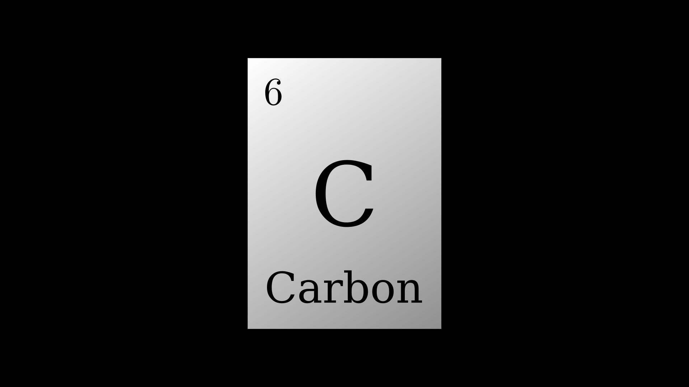
import pandas as pd from manim import * from manim_extensions.chemistry import MElementObject from manim_extensions.chemistry.manim_chemistry_molecule import MC_ELEMENT_DICT class MElementObjectScene(Scene): def construct(self): data = pd.DataFrame( { "AtomicNumber": [e.atomic_number for e in MC_ELEMENT_DICT.values()], "AtomicMass": [e.mass for e in MC_ELEMENT_DICT.values()], "Name": [e.name for e in MC_ELEMENT_DICT.values()], "Symbol": [e.symbol for e in MC_ELEMENT_DICT.values()], "Color": [e.color for e in MC_ELEMENT_DICT.values()], } ) data.to_csv("element_data_single.csv", index=False) carbon = MElementObject.from_csv_file_data( filename="element_data_single.csv", atomic_number=6 ) carbon.scale(2.5) self.add(carbon)
- frame_name_width_ratio(frame, name_text)[source]¶
Calculate the scale factor needed to fit the element name within the frame width.
- max_height_ratio(name_text)[source]¶
Scale down the name text if its height exceeds the 0.3 maximum threshold.
- create_frame_base()[source]¶
Create the gradient-filled rectangle that forms the element tile background.
- Return type:
- Returns:
The gradient-filled rectangle forming the element tile background.
- create_frame_with_text()[source]¶
Assemble the element tile with symbol, name and atomic number labels.
- static from_csv_file_data(filename, atomic_number, **kwargs)[source]¶
Load an
MElementObjectfrom a CSV file by looking up the given atomic number.- Parameters:
filename (
str) – Path to the CSV file with the element data.atomic_number (
int) – Atomic number of the element to look up.**kwargs (
Any) – Additional keyword arguments passed toMElementObject.
- Return type:
- Returns:
A
MElementObjectinstance representing the result.
- class manim_extensions.chemistry.MMoleculeObject(atoms_dict, bonds_dict, representation_type=None, explicit_carbons=False, explicit_hydrogens=False, planar=True, add_atoms_numbering=False, add_bonds_numbering=False, rotate_bonds=[], **kwargs)[source]¶
Represents a molecule in a similar fashion as it is done in academia.
- Parameters:
atoms_dict (
dict[Any,Any]) – Dictionary with the atom data of the molecule.bonds_dict (
dict[Any,Any]) – Dictionary with the bond data of the molecule.representation_type (
str|None) – Type of atom representation.explicit_carbons (
bool) – Whether to explicitly show carbon atoms.explicit_hydrogens (
bool) – Whether to explicitly show hydrogen atoms.planar (
bool) – Whether the molecule is rendered in 2D.add_atoms_numbering (
bool) – Whether to add numbering to the atoms.add_bonds_numbering (
bool) – Whether to add numbering to the bonds.**kwargs (
Any) – Additional keyword arguments passed toVGroup.
Examples
Example: MMoleculeFromFile ¶
from manim import * from manim_extensions.chemistry import MMoleculeObject class MMoleculeFromFile(Scene): def construct(self): mmolecule = MMoleculeObject.molecule_from_file("acetone_2d.mol") mmolecule.scale(1.6) self.play(Write(mmolecule)) self.play(Indicate(mmolecule.bonds[0])) self.wait()
Example: MMoleculeFromString ¶
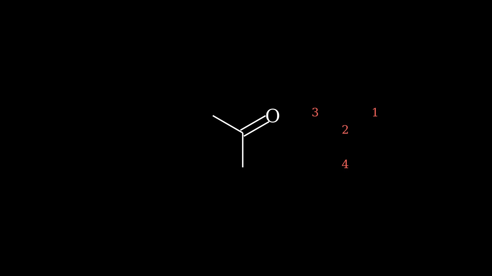
from manim import * from pathlib import Path from manim_extensions.chemistry import MMoleculeObject class MMoleculeFromString(Scene): def construct(self): mmolecule = MMoleculeObject.molecule_from_string( Path("acetone_2d.mol").read_text(), format="mol" ) self.add(mmolecule) mmolecule.add_atom_numbering() self.add(mmolecule[-1])
- get_atoms()[source]¶
Build
MAtomObjectinstances from the atoms dict and return them asVDict+ index dict.- Return type:
tuple[VDict,dict[Any,MAtomObject]]- Returns:
A tuple of the results.
- get_bonds()[source]¶
Build bond mobjects (single/double/triple/cram) from the bonds dict and return a VGroup.
- add_atom_numbering()[source]¶
Add numeric index labels next to each atom and return self.
- Return type:
- Returns:
The object itself, for method chaining.
- add_bond_numbering()[source]¶
Add numeric index labels next to each bond and return self.
- Return type:
- Returns:
The object itself, for method chaining.
- rotate_bond(rotate_bonds)[source]¶
Rotate specified bonds 180 degrees around their own axis and return self.
- complete_missing_hydrogens()[source]¶
Append implicit hydrogen labels to atoms that don’t fulfill their minimum bond count.
- Return type:
- Returns:
The resulting value.
- static from_mol_file(filename, *args, **kwargs)[source]¶
Create an
MMoleculeObjectby parsing a .mol file.- Parameters:
filename (
str) – Path to the .mol file.**kwargs (
Any) – Additional keyword arguments passed toMMoleculeObject.
- Return type:
- Returns:
A
MMoleculeObjectinstance representing the result.
- static from_mol_string(mol_string, *args, **kwargs)[source]¶
Create an
MMoleculeObjectby parsing a mol-format string.- Parameters:
mol_string (
str) – String with the molecule data in mol format.**kwargs (
Any) – Additional keyword arguments passed toMMoleculeObject.
- Return type:
- Returns:
A
MMoleculeObjectinstance representing the result.
- static from_sdf_file(filename, *args, **kwargs)[source]¶
Create a list of
MMoleculeObjects by parsing an .sdf file.- Parameters:
filename (
str) – Path to the .sdf file.**kwargs (
Any) – Additional keyword arguments passed toMMoleculeObject.
- Return type:
- Returns:
A list of the results.
- static from_sdf_string(sdf_string, *args, **kwargs)[source]¶
Create a list of
MMoleculeObjects by parsing an sdf-format string.- Parameters:
sdf_string (
str) – String with the molecule data in sdf format.**kwargs (
Any) – Additional keyword arguments passed toMMoleculeObject.
- Return type:
- Returns:
A list of the results.
- find_atom_position_by_index(atom_index)[source]¶
Returns the position of a single atom given its index.
- Parameters:
- Return type:
- Returns:
Arraywith the [x, y, z] coordinates of the atom.- Raises:
Examples
In [9]:
molecule = MMoleculeObject.molecule_from_file("dimethylpropane.mol") print(molecule.find_atom_position_by_index(1))
Out[9]:
[ 0.2253 -0.0829 0. ]
- find_atoms_position_by_index(atoms_index_list)[source]¶
Returns the position of multiple atoms given their indices.
- Parameters:
atoms_index_list (
list[Any]) – List of atoms indices to be gotten.- Return type:
- Returns:
List of the atoms positions.
Examples
In [10]:
from pprint import pprint molecule = MMoleculeObject.molecule_from_file("dimethylpropane.mol") pprint(molecule.find_atoms_position_by_index([1,2,3]))
Out[10]:
[array([ 0.2253, -0.0829, 0. ]), array([-1.1214, 0.2898, 0. ]), array([1.1214, 1.162 , 0. ])]
- find_bond_center_by_index(bond_index)[source]¶
Returns the [x, y, z] coordinates of a bond given a bond index.
- Parameters:
bond_index (
int) – Index of the bond.- Return type:
- Returns:
[x, y, z] coordinates of bond center.
- Raises:
Examples
In [11]:
molecule = MMoleculeObject.molecule_from_file("dimethylpropane.mol") print(molecule.find_bond_center_by_index(1))
Out[11]:
[0.67335 0.53955 0. ]
- find_position_along_bond_axis(bond_index, position_buff)[source]¶
Returns a position along the bond axis given a bond index and depending on a position_buff. A value of 1 will return one end of the bond. A value of -1 will return the other end. All values in between return positions at some point of the middle of the bond, being 0 the center. Values bigger or lower that 1 and -1 will return positions outside the bond.
- find_bonds_center_by_index(bonds_index_list)[source]¶
Returns the position of multiple bonds given their indices.
- Parameters:
bonds_index_list (
list[Any]) – List of bonds indices to be gotten.- Return type:
- Returns:
List of the bonds positions.
Examples
In [12]:
from pprint import pprint molecule = MMoleculeObject.molecule_from_file("dimethylpropane.mol") pprint(molecule.find_bonds_center_by_index([1, 2, 3]))
Out[12]:
[array([0.67335, 0.53955, 0. ]), array([ 0.10735, -0.35215, 0. ]), array([ 0.5685 , -0.62245, 0. ])]
- classmethod mc_molecule_to_atoms_and_bonds(mc_molecule)[source]¶
Transforms the structure of a mc_molecule to a (vertices, edges) tuple.
The tuple has the following structure:
Vertices: {<atom_index>: MCAtom} Edges: {(<from_atom_index>, <to_atom_index>): MCBond}- Parameters:
mc_molecule (
MCMolecule) – TheMCMoleculeobject to transform.- Return type:
- Returns:
A tuple containing atoms and bonds dictionaries.
- class manim_extensions.chemistry.MolParser(filename)[source]¶
Parses mol files.
Examples
Example: MolParserOverview ¶
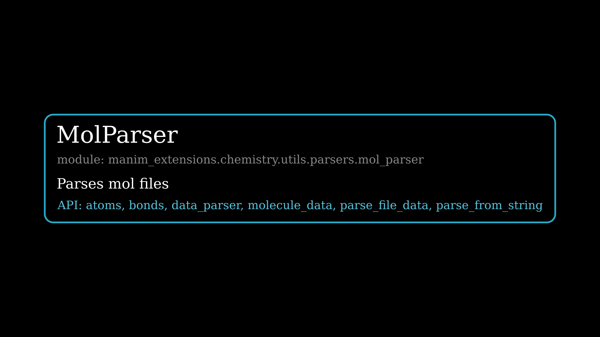
from manim import * from manim_extensions.chemistry.utils.parsers.mol_parser import MolParser MolParserTarget = MolParser class MolParserOverview(Scene): def construct(self): public = [n for n in dir(MolParserTarget) if not n.startswith("_")] card = VGroup( Text('MolParser', font_size=36), Text('module: manim_extensions.chemistry.utils.parsers.mol_parser', font_size=18, color=GREY), Text('Parses mol files', font_size=22), Text("API: " + ", ".join(public[:6]), font_size=18, color=BLUE), ).arrange(DOWN, aligned_edge=LEFT, buff=0.25) card.scale_to_fit_width(11.5).move_to(ORIGIN) frame = RoundedRectangle( width=12.1, height=card.height + 0.5, corner_radius=0.2, color=BLUE_D ).move_to(card) self.add(frame, card)
In [13]:
from pprint import pprint parsed_mol = MolParser( filename="acetone_2d.mol" ) pprint(parsed_mol.atoms_data)
Out[13]:
{1: {'bond_to': {2: 'C'}, 'coords': array([3.732, 0.75 , 0. ]), 'element': 'O'}, 2: {'bond_to': {1: 'O', 3: 'C', 4: 'C'}, 'coords': array([2.866, 0.25 , 0. ]), 'element': 'C'}, 3: {'bond_to': {2: 'C', 5: 'H', 6: 'H', 7: 'H'}, 'coords': array([2. , 0.75, 0. ]), 'element': 'C'}, 4: {'bond_to': {2: 'C', 8: 'H', 9: 'H', 10: 'H'}, 'coords': array([ 2.866, -0.75 , 0. ]), 'element': 'C'}, 5: {'bond_to': {3: 'C'}, 'coords': array([2.31 , 1.2869, 0. ]), 'element': 'H'}, 6: {'bond_to': {3: 'C'}, 'coords': array([1.4631, 1.06 , 0. ]), 'element': 'H'}, 7: {'bond_to': {3: 'C'}, 'coords': array([1.69 , 0.2131, 0. ]), 'element': 'H'}, 8: {'bond_to': {4: 'C'}, 'coords': array([ 2.246, -0.75 , 0. ]), 'element': 'H'}, 9: {'bond_to': {4: 'C'}, 'coords': array([ 2.866, -1.37 , 0. ]), 'element': 'H'}, 10: {'bond_to': {4: 'C'}, 'coords': array([ 3.486, -0.75 , 0. ]), 'element': 'H'}}In [14]:
pprint(parsed_mol.bonds_data)
Out[14]:
{1: {'bond_type': '2', 'from_atom_index': 2, 'reacting_center_status': None, 'stereo': None, 'to_atom_index': 1, 'topology': None}, 2: {'bond_type': '1', 'from_atom_index': 3, 'reacting_center_status': None, 'stereo': None, 'to_atom_index': 2, 'topology': None}, 3: {'bond_type': '1', 'from_atom_index': 4, 'reacting_center_status': None, 'stereo': None, 'to_atom_index': 2, 'topology': None}, 4: {'bond_type': '1', 'from_atom_index': 5, 'reacting_center_status': None, 'stereo': None, 'to_atom_index': 3, 'topology': None}, 5: {'bond_type': '1', 'from_atom_index': 6, 'reacting_center_status': None, 'stereo': None, 'to_atom_index': 3, 'topology': None}, 6: {'bond_type': '1', 'from_atom_index': 7, 'reacting_center_status': None, 'stereo': None, 'to_atom_index': 3, 'topology': None}, 7: {'bond_type': '1', 'from_atom_index': 8, 'reacting_center_status': None, 'stereo': None, 'to_atom_index': 4, 'topology': None}, 8: {'bond_type': '1', 'from_atom_index': 9, 'reacting_center_status': None, 'stereo': None, 'to_atom_index': 4, 'topology': None}, 9: {'bond_type': '1', 'from_atom_index': 10, 'reacting_center_status': None, 'stereo': None, 'to_atom_index': 4, 'topology': None}}- static data_parser(data)[source]¶
Parse the lines of a MOL file into atoms and bonds dicts.
- Parameters:
data (
Any) – Lines of the MOL file as returned byread_file().- Return type:
- Returns:
(atoms_data, bonds_data)tuple of dictionaries.
- class manim_extensions.chemistry.Molecule(molecule_class=GraphMolecule)[source]¶
Works as a proxy between different types of molecules with the same methods.
Supported types of molecules are:
- Parameters:
molecule_class (
type[GraphMolecule]) – The molecule class to proxy to, such asGraphMolecule,MMoleculeObjectorThreeDMolecule.
Examples
Example: GraphMoleculeFromMolecule ¶
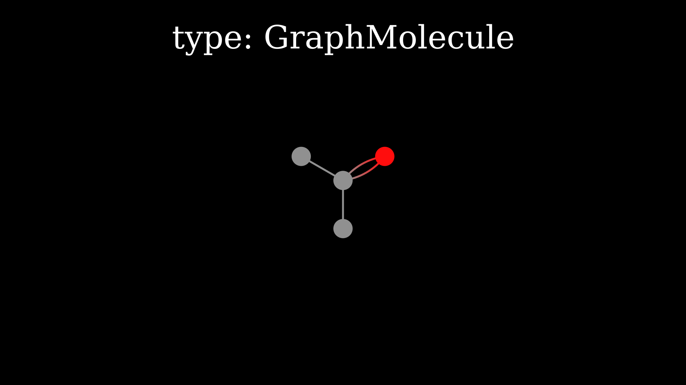
from manim import * from pathlib import Path from manim_extensions.chemistry import GraphMolecule, Molecule class GraphMoleculeFromMolecule(Scene): def construct(self): molecule = Molecule(GraphMolecule).molecule_from_string( Path("acetone_2d.mol").read_text(), format="mol" ) label = Text(f"type: {type(molecule).__name__}").to_edge(UP) self.add(molecule) self.add(label)
Example: MMoleculeObjectFromMolecule ¶
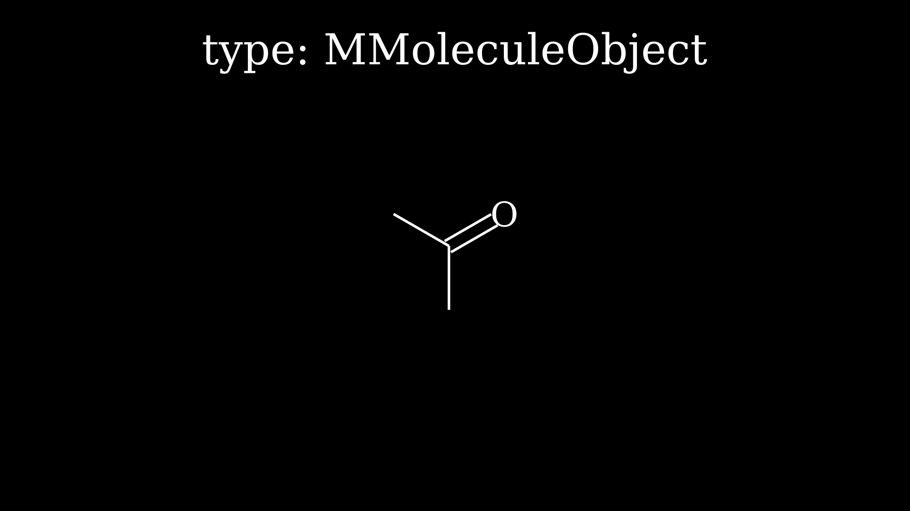
from manim import * from pathlib import Path from manim_extensions.chemistry import MMoleculeObject, Molecule class MMoleculeObjectFromMolecule(Scene): def construct(self): molecule = Molecule(MMoleculeObject).molecule_from_string( Path("acetone_2d.mol").read_text(), format="mol" ) label = Text(f"type: {type(molecule).__name__}").to_edge(UP) self.add(molecule) self.add(label)
- molecule_from_file(*args, **kwargs)[source]¶
Delegate to the wrapped molecule class to construct a molecule from a file.
- Parameters:
**kwargs (
Any) – Additional keyword arguments forwarded tomolecule_from_file()of the wrapped molecule class.- Return type:
- Returns:
The molecule loaded from the file.
- multiple_molecules_from_file(*args, **kwargs)[source]¶
Delegate to the wrapped molecule class to construct multiple molecules from a file.
- Parameters:
**kwargs (
Any) – Additional keyword arguments forwarded tomultiple_molecules_from_file()of the wrapped molecule class.- Return type:
- Returns:
The group of molecules loaded from the file.
- molecule_from_string(*args, **kwargs)[source]¶
Delegate to the wrapped molecule class to construct a molecule from a string.
- Parameters:
**kwargs (
Any) – Additional keyword arguments forwarded tomolecule_from_string()of the wrapped molecule class.- Return type:
- Returns:
The molecule parsed from the string.
- multiple_molecules_from_string(*args, **kwargs)[source]¶
Delegate to the wrapped molecule class to construct multiple molecules from a string.
- Parameters:
**kwargs (
Any) – Additional keyword arguments forwarded tomultiple_molecules_from_string()of the wrapped molecule class.- Return type:
- Returns:
The group of molecules parsed from the string.
- molecule_from_pubchem(*args, **kwargs)[source]¶
Delegate to the wrapped molecule class to fetch a molecule from PubChem.
- Parameters:
**kwargs (
Any) – Additional keyword arguments forwarded tomolecule_from_pubchem()of the wrapped molecule class.- Return type:
- Returns:
The molecule fetched from PubChem.
- mc_molecule_to_atoms_and_bonds(*args, **kwargs)[source]¶
Delegate to the wrapped molecule class to convert an
MCMoleculeto atoms and bonds.
- class manim_extensions.chemistry.NamedComplexFormula(name_dict, formula_dict, direction=DOWN, buff=DEFAULT_MOBJECT_TO_MOBJECT_BUFFER, *args, **kwargs)[source]¶
Complex formula build with two dicts.
- Parameters:
name_dict (
dict[Any,Any]) – Dictionary mapping name strings to their colors.formula_dict (
dict[Any,Any]) – Dictionary mapping formula strings to their colors.direction (
Vector3D) – Direction in which the name is placed relative to the formula.buff (
float) – Distance between the formula and its name.args (
Any) – Additional positional arguments passed toVGroup.**kwargs (
Any) – Additional keyword arguments passed toVGroup.
Examples
Example: NamedComplexFormulaScene ¶
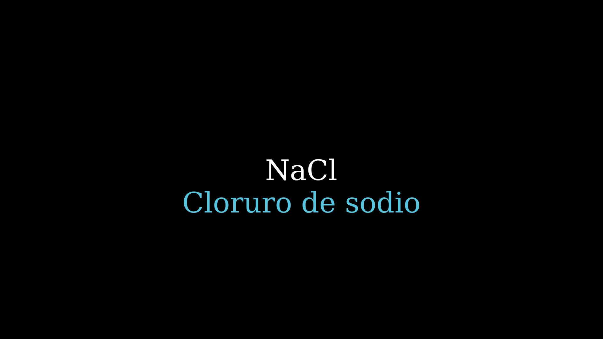
from manim import * from manim_extensions.chemistry.twoD.chemical_formula import NamedComplexFormula class NamedComplexFormulaScene(Scene): def construct(self): self.add(NamedComplexFormula( {"Cloruro de sodio": BLUE}, {"NaCl": WHITE}, ))
- class manim_extensions.chemistry.NamedFormula(metal_name, non_metal_name, formula, metal_color=WHITE, non_metal_color=WHITE, oxygen_color=WHITE, font='', spanish_structure=False, buff=DEFAULT_MOBJECT_TO_MOBJECT_BUFFER, direction=DOWN, *args, **kwargs)[source]¶
A chemical formula together with its name.
- Parameters:
metal_name (
str) – Name of the metal element.non_metal_name (
str) – Name of the non-metal element.formula (
str) – The chemical formula to render.metal_color (
ManimColor|str) – Color of the metal element.non_metal_color (
ManimColor|str) – Color of the non-metal element.oxygen_color (
ManimColor|str) – Color of the oxygen element.font (
str) – Font of the name text.spanish_structure (
bool) – Whether to use the spanish name ordering (non-metal first).buff (
float) – Distance between the formula and its name.direction (
Vector3D) – Direction in which the name is placed relative to the formula.args (
Any) – Additional positional arguments passed toVGroup.**kwargs (
Any) – Additional keyword arguments passed toVGroup.
Examples
Example: NamedFormulaScene ¶
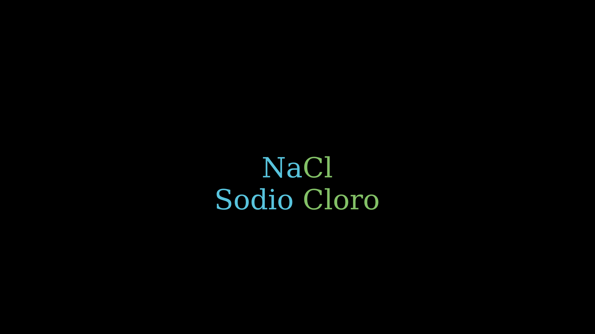
from manim import * from manim_extensions.chemistry.twoD.chemical_formula import NamedFormula class NamedFormulaScene(Scene): def construct(self): self.add(NamedFormula("Sodio", "Cloro", "NaCl", metal_color=BLUE, non_metal_color=GREEN))
- make_name()[source]¶
Not all languages use the same naming structure. For example, in english NaCl is Sodium (Na) Chloride (Cl) while in spanish it is Cloruro (Cl) Sódico (Na). Reimplement it as you need.
- Return type:
- Returns:
A
MarkupTextinstance representing the result.
- class manim_extensions.chemistry.NamedMolecule(name, molecule_data, direction=DOWN, buff=1, tex=False, font='', *args, **kwargs)[source]¶
A molecule together with its name.
- Parameters:
name (
str) – The name of the molecule. Can be a string or aSVGMobject.molecule_data (
MMoleculeObject|dict[str,Any]) – AnMMoleculeObjector the molecule data to construct one.direction (
Point3D) – Direction in which the name is placed relative to the molecule.buff (
float) – Distance between the molecule and its name.font (
str) – Font of the name text.args (
Any) – Additional positional arguments passed toVGroup.**kwargs (
Any) – Additional keyword arguments passed toVGroup.
Examples
Example: NamedMoleculeScene ¶
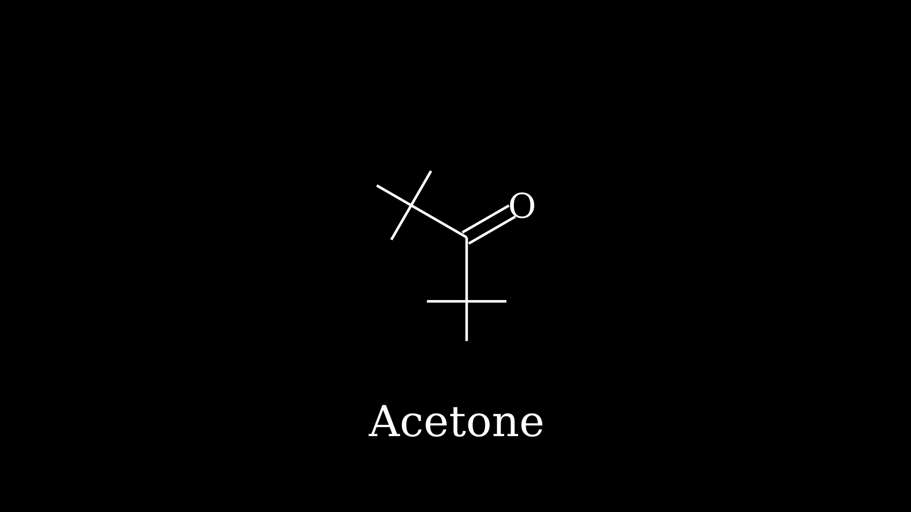
from manim import * from pathlib import Path from manim_extensions.chemistry import NamedMolecule class NamedMoleculeScene(Scene): def construct(self): named_molecule = NamedMolecule.from_mol_file( name="Acetone", filename="acetone_2d_named.mol" ) self.add(named_molecule)
- static from_mol_file(name, filename, direction=DOWN, buff=1, tex=False, font='', *args, **kwargs)[source]¶
Create a
NamedMoleculefrom a .mol file and a name string.- Parameters:
name (
str) – Name of the molecule.filename (
str) – Path to the .mol file.direction (
Point3D) – Direction in which the name is placed relative to the molecule.buff (
float) – Distance between the molecule and its name.font (
str) – Font of the name text.**kwargs (
Any) – Additional keyword arguments passed toMMoleculeObject.
- Return type:
- Returns:
A
NamedMoleculeinstance representing the result.
- static from_mol_string(name, mol_str, direction=DOWN, buff=1, tex=False, font='', *args, **kwargs)[source]¶
Create a
NamedMoleculefrom a mol-format string and a name string.- Parameters:
name (
str) – Name of the molecule.mol_str (
str) – String with the molecule data in mol format.direction (
Point3D) – Direction in which the name is placed relative to the molecule.buff (
float) – Distance between the molecule and its name.font (
str) – Font of the name text.**kwargs (
Any) – Additional keyword arguments passed toMMoleculeObject.
- Return type:
- Returns:
A
NamedMoleculeinstance representing the result.
- static from_sdf_file(name, filename, direction=DOWN, buff=1, tex=False, font='', *args, **kwargs)[source]¶
Create a list of
NamedMolecules from an .sdf file with a shared base name.- Parameters:
name (
str) – Base name of the molecules.filename (
str) – Path to the .sdf file.direction (
Point3D) – Direction in which the name is placed relative to the molecule.buff (
float) – Distance between the molecule and its name.font (
str) – Font of the name text.**kwargs (
Any) – Additional keyword arguments passed toMMoleculeObject.
- Return type:
- Returns:
A list of the results.
- static from_sdf_string(name, sdf_str, direction=DOWN, buff=1, tex=False, font='', *args, **kwargs)[source]¶
Create a list of
NamedMolecules from an sdf-format string with a shared base name.- Parameters:
name (
str) – Base name of the molecules.sdf_str (
str) – String with the molecule data in sdf format.direction (
Point3D) – Direction in which the name is placed relative to the molecule.buff (
float) – Distance between the molecule and its name.font (
str) – Font of the name text.**kwargs (
Any) – Additional keyword arguments passed toMMoleculeObject.
- Return type:
- Returns:
A list of the results.
- rotate_bond(bonds)[source]¶
Rotate specified bonds on the inner molecule and return self.
- add_bond_numbering()[source]¶
Add bond numbering to the inner molecule and return self.
- Return type:
- Returns:
The object itself, for method chaining.
- add_atom_numbering()[source]¶
Add atom numbering to the inner molecule and return self.
- Return type:
- Returns:
The object itself, for method chaining.
- find_atom_position_by_index(atom_index)[source]¶
Returns the position of a single atom given its index.
- Parameters:
- Return type:
- Returns:
Arraywith the [x, y, z] coordinates of the atom.- Raises:
Examples
In [15]:
molecule = MMoleculeObject.molecule_from_file("dimethylpropane.mol") print(molecule.find_atom_position_by_index(1))
Out[15]:
[ 0.2253 -0.0829 0. ]
- find_atoms_position_by_index(atoms_index_list)[source]¶
Returns the position of multiple atoms given their indices.
- Parameters:
atoms_index_list (
list[Any]) – List of atoms indices to be gotten.- Return type:
- Returns:
List of the atoms positions.
Examples
In [16]:
from pprint import pprint molecule = MMoleculeObject.molecule_from_file("dimethylpropane.mol") pprint(molecule.find_atoms_position_by_index([1,2,3]))
Out[16]:
[array([ 0.2253, -0.0829, 0. ]), array([-1.1214, 0.2898, 0. ]), array([1.1214, 1.162 , 0. ])]
- find_bond_center_by_index(bond_index)[source]¶
Returns the [x, y, z] coordinates of a bond given a bond index.
- Parameters:
bond_index (
int) – Index of the bond.- Return type:
- Returns:
[x, y, z] coordinates of bond center.
- Raises:
Examples
In [17]:
molecule = MMoleculeObject.molecule_from_file("dimethylpropane.mol") print(molecule.find_bond_center_by_index(1))
Out[17]:
[0.67335 0.53955 0. ]
- find_position_along_bond_axis(bond_index, position_buff)[source]¶
Returns a position along the bond axis given a bond index and depending on a position_buff. A value of 1 will return one end of the bond. A value of -1 will return the other end. All values in between return positions at some point of the middle of the bond, being 0 the center. Values bigger or lower that 1 and -1 will return positions outside the bond.
- find_bonds_center_by_index(bonds_index_list)[source]¶
Returns the position of multiple bonds given their indices.
- Parameters:
bonds_index_list (
list[Any]) – List of bonds indices to be gotten.- Return type:
- Returns:
List of the bonds positions.
Examples
In [18]:
from pprint import pprint molecule = MMoleculeObject.molecule_from_file("dimethylpropane.mol") pprint(molecule.find_bonds_center_by_index([1, 2, 3]))
Out[18]:
[array([0.67335, 0.53955, 0. ]), array([ 0.10735, -0.35215, 0. ]), array([ 0.5685 , -0.62245, 0. ])]

- class manim_extensions.chemistry.Orbital(n=None, l=0, m=0, size=3, **kwargs)[source]¶
Uses positive and negative orbitals to create an orbital. n value is still not implemented TODO
Important
OpenGLSurface requires the OpenGL renderer; render scenes containing orbitals with
manim render --renderer=opengl.- Parameters:
Examples
Example: OrbitalOverview ¶
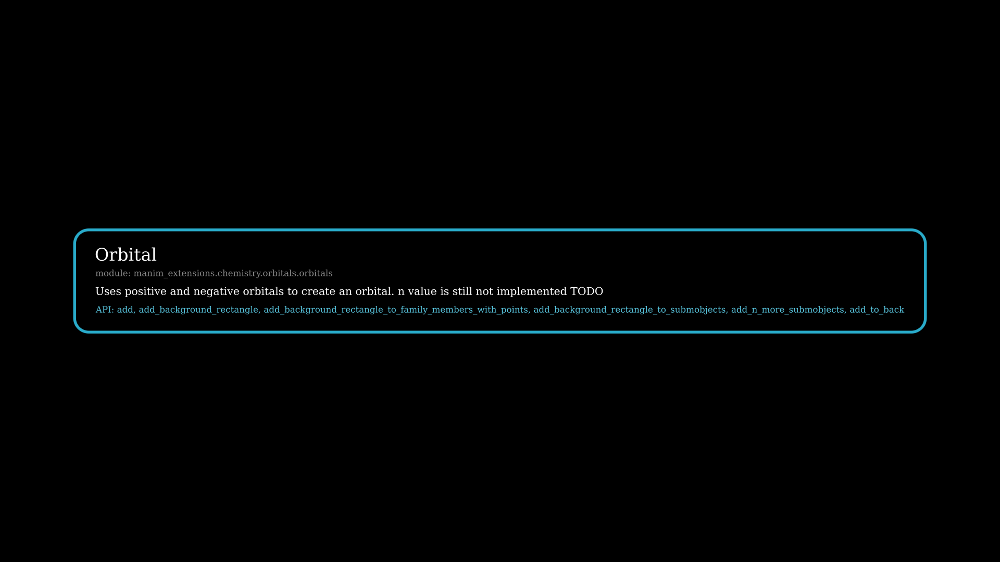
from manim import * from manim_extensions.chemistry.orbitals.orbitals import Orbital OrbitalTarget = Orbital class OrbitalOverview(Scene): def construct(self): public = [n for n in dir(OrbitalTarget) if not n.startswith("_")] card = VGroup( Text('Orbital', font_size=36), Text('module: manim_extensions.chemistry.orbitals.orbitals', font_size=18, color=GREY), Text('Uses positive and negative orbitals to create an orbital. n value is still not implemented TODO', font_size=22), Text("API: " + ", ".join(public[:6]), font_size=18, color=BLUE), ).arrange(DOWN, aligned_edge=LEFT, buff=0.25) card.scale_to_fit_width(11.5).move_to(ORIGIN) frame = RoundedRectangle( width=12.1, height=card.height + 0.5, corner_radius=0.2, color=BLUE_D ).move_to(card) self.add(frame, card)
from manim_extensions.chemistry.orbitals.orbitals import Orbital orbital = Orbital(n=2, l=1, m=0, size=2)
- class manim_extensions.chemistry.PeriodicTable(data_file, *vmobjects, **kwargs)[source]¶
Draws a periodic table using the data using a configuration from a csv file.
- Parameters:
Examples
Example: PeriodicTableScene ¶
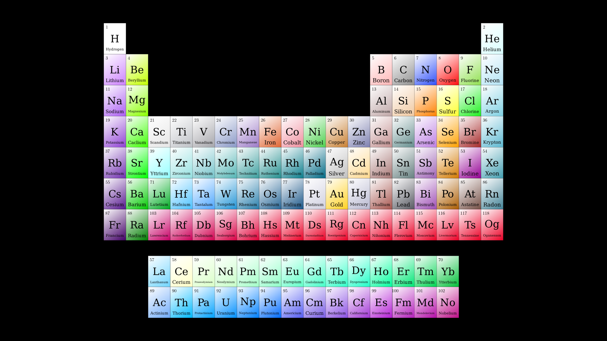
import pandas as pd from manim import * from manim_extensions.chemistry import PeriodicTable from manim_extensions.chemistry.manim_chemistry_molecule import MC_ELEMENT_DICT class PeriodicTableScene(Scene): def construct(self): data = pd.DataFrame( { "AtomicNumber": [e.atomic_number for e in MC_ELEMENT_DICT.values()], "AtomicMass": [e.mass for e in MC_ELEMENT_DICT.values()], "Name": [e.name for e in MC_ELEMENT_DICT.values()], "Symbol": [e.symbol for e in MC_ELEMENT_DICT.values()], "Color": [e.color for e in MC_ELEMENT_DICT.values()], } ) data.to_csv("element_data.csv", index=False) table = PeriodicTable(data_file="element_data.csv") table.scale(1.3) self.add(table)
- class manim_extensions.chemistry.PubchemAPIManager(cid=None, name=None, smiles=None, inchi=None, three_d=False, format='json')[source]¶
Manages the requests to the PubChem API to retrieve molecular data.
- Parameters:
Attributes
- BASE_URL = 'https://pubchem.ncbi.nlm.nih.gov/rest/pug/compound/'¶
Base URL for the PubChem PUG REST API.
Examples
Example: PubchemAPIManagerOverview ¶
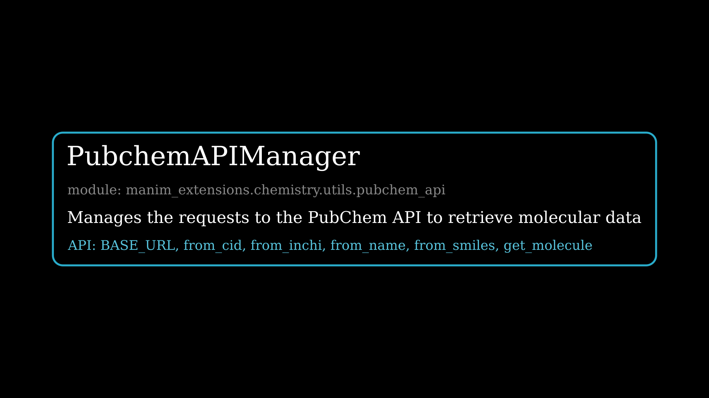
from manim import * from manim_extensions.chemistry.utils.pubchem_api import PubchemAPIManager PubchemAPIManagerTarget = PubchemAPIManager class PubchemAPIManagerOverview(Scene): def construct(self): public = [n for n in dir(PubchemAPIManagerTarget) if not n.startswith("_")] card = VGroup( Text('PubchemAPIManager', font_size=36), Text('module: manim_extensions.chemistry.utils.pubchem_api', font_size=18, color=GREY), Text('Manages the requests to the PubChem API to retrieve molecular data', font_size=22), Text("API: " + ", ".join(public[:6]), font_size=18, color=BLUE), ).arrange(DOWN, aligned_edge=LEFT, buff=0.25) card.scale_to_fit_width(11.5).move_to(ORIGIN) frame = RoundedRectangle( width=12.1, height=card.height + 0.5, corner_radius=0.2, color=BLUE_D ).move_to(card) self.add(frame, card)
from manim_extensions.chemistry.utils.pubchem_api import PubchemAPIManager manager = PubchemAPIManager(name="aspirin", three_d=True)
- handle_request(request, identifier)[source]¶
Validate a PubChem API response and return the decoded payload.
Adds a small sleep after the request to avoid rate-limiting the PubChem API.
- Parameters:
- Return type:
- Returns:
JSON string of the response body, or the raw decoded content if JSON parsing fails.
- Raises:
Exception – If the response status code is 404 (not found) or any other error.
- from_cid()[source]¶
Fetch molecule data from PubChem using the compound ID (CID).
- Return type:
- Returns:
The PubChem record fetched by compound ID, as a string.
- from_name()[source]¶
Fetch molecule data from PubChem using the common name.
- Return type:
- Returns:
The PubChem record fetched by common name, as a string.
- from_smiles()[source]¶
Fetch molecule data from PubChem using a SMILES string.
- Return type:
- Returns:
The PubChem record fetched from a SMILES string.
- class manim_extensions.chemistry.SDFParser(filename)[source]¶
Parses sdf files. The sdf format is very similar to the mol format. It only contains some extra lines. By modifying the read file and removing those extra lines we can use the logic already implemented in
MolParser.The main difference between an sdf file and a mol file is an sdf file supports having multiple molecules, so we are returning a list of molecules instead of a single molecule.
Examples
Example: SDFParserOverview ¶
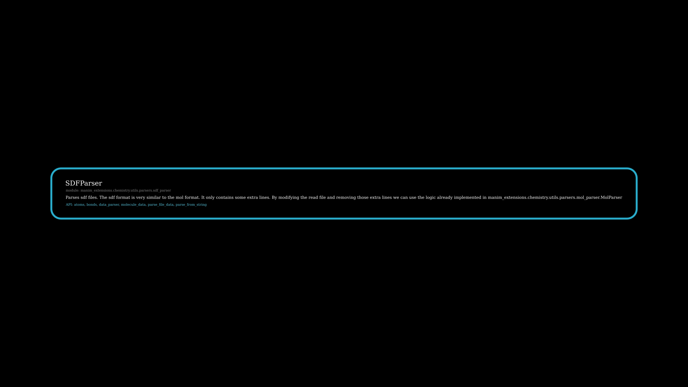
from manim import * from manim_extensions.chemistry.utils.parsers.sdf_parser import SDFParser SDFParserTarget = SDFParser class SDFParserOverview(Scene): def construct(self): public = [n for n in dir(SDFParserTarget) if not n.startswith("_")] card = VGroup( Text('SDFParser', font_size=36), Text('module: manim_extensions.chemistry.utils.parsers.sdf_parser', font_size=18, color=GREY), Text('Parses sdf files. The sdf format is very similar to the mol format. It only contains some extra lines. By modifying the read file and removing those extra lines we can use the logic already implemented in manim_extensions.chemistry.utils.parsers.mol_parser.MolParser', font_size=22), Text("API: " + ", ".join(public[:6]), font_size=18, color=BLUE), ).arrange(DOWN, aligned_edge=LEFT, buff=0.25) card.scale_to_fit_width(11.5).move_to(ORIGIN) frame = RoundedRectangle( width=12.1, height=card.height + 0.5, corner_radius=0.2, color=BLUE_D ).move_to(card) self.add(frame, card)
In [19]:
from pprint import pprint parsed_sdf = SDFParser(filename="acetone_2d.sdf") pprint(parsed_sdf.molecular_data[0][0])
Out[19]:
{1: {'bond_to': {2: 'O', 3: 'C'}, 'coords': array([0., 0., 0.]), 'element': 'C'}, 2: {'bond_to': {1: 'C'}, 'coords': array([1.5, 0. , 0. ]), 'element': 'O'}, 3: {'bond_to': {1: 'C'}, 'coords': array([-1., 1., 0.]), 'element': 'C'}}In [20]:
pprint(parsed_sdf.molecular_data[0][1])
Out[20]:
{1: {'bond_type': '2', 'from_atom_index': 2, 'reacting_center_status': None, 'stereo': 0, 'to_atom_index': 1, 'topology': None}, 2: {'bond_type': '1', 'from_atom_index': 3, 'reacting_center_status': None, 'stereo': 0, 'to_atom_index': 1, 'topology': None}}- static read_file(filename)[source]¶
sdf files might contain multiple molecules, so we return a list of list of string when reading a file.
- class manim_extensions.chemistry.SimpleBond(from_atom, to_atom, type=0, subtype=None, color=WHITE, index=0, **kwargs)[source]¶
A single-line chemical bond between two atoms.
Examples
Example: SimpleBondScene ¶
import numpy as np from manim import * from manim_extensions.chemistry.twoD.atom import MAtomObject from manim_extensions.chemistry.twoD.bond import SimpleBond class SimpleBondScene(Scene): def construct(self): carbon = MAtomObject(element="C") oxygen = MAtomObject(element="O", coords=np.array([1.6, 0, 0])) content = VGroup(carbon, oxygen, SimpleBond(carbon, oxygen)) content.scale_to_fit_width(6).move_to(ORIGIN) self.add(content)
- shorter_from_subtype(direction=None)[source]¶
Return a line shortened at the from-atom end, starting from the to atom.
- shorter_to_subtype(direction=None)[source]¶
Return a line shortened at the to-atom end, starting from the from atom.
- class manim_extensions.chemistry.ThreeDAtom(element, coords=np.array([0, 0, 0]), **kwargs)[source]¶
Used to draw a sphere which represents an atom. Uses an Element to get data.
- Parameters:
element (
Element) – The element whose data (color) is used to draw the atom.coords (
Point3D) – 3D coordinates of the atom center.**kwargs (
Any) – Additional keyword arguments passed toOpenGLSphere.
Examples
Example: ThreeDAtomOverview ¶
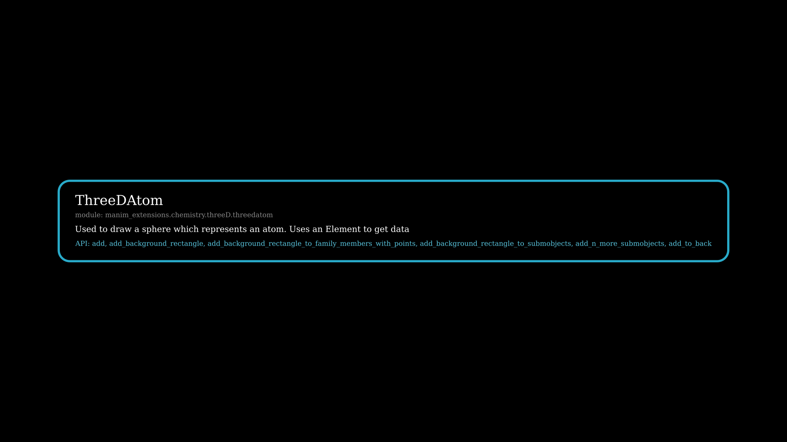
from manim import * from manim_extensions.chemistry.threeD.threedatom import ThreeDAtom ThreeDAtomTarget = ThreeDAtom class ThreeDAtomOverview(Scene): def construct(self): public = [n for n in dir(ThreeDAtomTarget) if not n.startswith("_")] card = VGroup( Text('ThreeDAtom', font_size=36), Text('module: manim_extensions.chemistry.threeD.threedatom', font_size=18, color=GREY), Text('Used to draw a sphere which represents an atom. Uses an Element to get data', font_size=22), Text("API: " + ", ".join(public[:6]), font_size=18, color=BLUE), ).arrange(DOWN, aligned_edge=LEFT, buff=0.25) card.scale_to_fit_width(11.5).move_to(ORIGIN) frame = RoundedRectangle( width=12.1, height=card.height + 0.5, corner_radius=0.2, color=BLUE_D ).move_to(card) self.add(frame, card)
import numpy as np from manim_extensions.chemistry.threeD.threedatom import ThreeDAtom from manim_extensions.chemistry.utils.utils import get_element atom = ThreeDAtom(get_element("C"), coords=np.array([0.0, 0.0, 0.0]))
- class manim_extensions.chemistry.ThreeDBond(from_atom, to_atom, bond_type, *mobjects, **kwargs)[source]¶
Used to create a tridimensional bond. Uses an origin atom and a target atom to be drawn.
- Parameters:
from_atom (
ThreeDAtom) – The atom the bond starts from.to_atom (
ThreeDAtom) – The atom the bond ends at.bond_type (
int) – Type of the bond: 1 for single, 2 (also 5, 7) for double, 3 for triple.mobjects (
Any) – Additional mobjects to add to the group.**kwargs (
Any) – Additional keyword arguments passed to OpenGLGroup.
Examples
Example: ThreeDBondOverview ¶
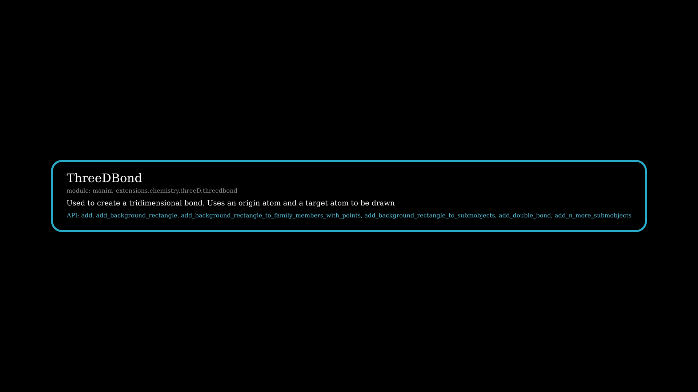
from manim import * from manim_extensions.chemistry.threeD.threedbond import ThreeDBond ThreeDBondTarget = ThreeDBond class ThreeDBondOverview(Scene): def construct(self): public = [n for n in dir(ThreeDBondTarget) if not n.startswith("_")] card = VGroup( Text('ThreeDBond', font_size=36), Text('module: manim_extensions.chemistry.threeD.threedbond', font_size=18, color=GREY), Text('Used to create a tridimensional bond. Uses an origin atom and a target atom to be drawn', font_size=22), Text("API: " + ", ".join(public[:6]), font_size=18, color=BLUE), ).arrange(DOWN, aligned_edge=LEFT, buff=0.25) card.scale_to_fit_width(11.5).move_to(ORIGIN) frame = RoundedRectangle( width=12.1, height=card.height + 0.5, corner_radius=0.2, color=BLUE_D ).move_to(card) self.add(frame, card)
import numpy as np from manim_extensions.chemistry.threeD.threedatom import ThreeDAtom from manim_extensions.chemistry.threeD.threedbond import ThreeDBond from manim_extensions.chemistry.utils.utils import get_element carbon = ThreeDAtom(get_element("C"), coords=np.array([0.0, 0.0, 0.0])) oxygen = ThreeDAtom(get_element("O"), coords=np.array([1.2, 0.0, 0.0])) bond = ThreeDBond(from_atom=carbon, to_atom=oxygen, bond_type=2)
- __str__()[source]¶
Return a description of the bonded atoms.
- Return type:
- Returns:
A human-readable description of the two bonded atoms.
- __repr__()[source]¶
Return the same description as
__str__.- Return type:
- Returns:
A human-readable description of the two bonded atoms.
- add_single_bond()[source]¶
Create a single bond as two half-cylinders colored by each connected atom.
- Return type:
OpenGLGroup- Returns:
A OpenGLGroup instance representing the result.
- add_double_bond()[source]¶
Create a double bond with two parallel single-bond cylinders offset perpendicularly.
- Return type:
OpenGLGroup- Returns:
A OpenGLGroup instance representing the result.
- add_triple_bond()[source]¶
Create a triple bond with three parallel single-bond cylinders offset perpendicularly.
- Return type:
OpenGLGroup- Returns:
A OpenGLGroup instance representing the result.
- class manim_extensions.chemistry.ThreeDMolecule(atoms_dict, bonds_dict, source_csv=None, add_bonds=True, add_atoms=True, *mobjects, **kwargs)[source]¶
Draws a 3D
Molecule.Requires using opengl renderer.
- Parameters:
atoms_dict (
dict[Any,Any]) – Dictionary with the atom data of the molecule.bonds_dict (
dict[Any,Any]) – Dictionary with the bond data of the molecule.source_csv (
str|None) – Path to a csv file with element data.add_bonds (
bool) – Whether to add the bonds to the molecule.add_atoms (
bool) – Whether to add the atoms to the molecule.mobjects (
Any) – Additional mobjects to add to the group.**kwargs (
Any) – Additional keyword arguments passed to OpenGLGroup.
Attributes
- group_class¶
alias of
OpenGLGroup
Examples
Example: ThreeDMoleculeOverview ¶
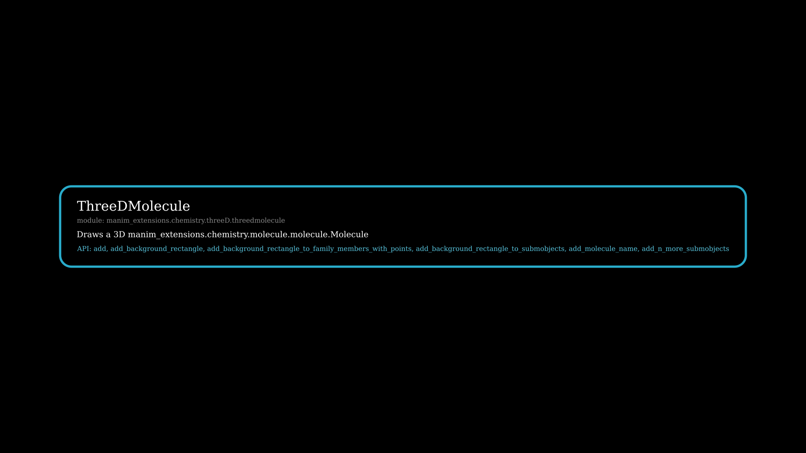
from manim import * from manim_extensions.chemistry.threeD.threedmolecule import ThreeDMolecule ThreeDMoleculeTarget = ThreeDMolecule class ThreeDMoleculeOverview(Scene): def construct(self): public = [n for n in dir(ThreeDMoleculeTarget) if not n.startswith("_")] card = VGroup( Text('ThreeDMolecule', font_size=36), Text('module: manim_extensions.chemistry.threeD.threedmolecule', font_size=18, color=GREY), Text('Draws a 3D manim_extensions.chemistry.molecule.molecule.Molecule', font_size=22), Text("API: " + ", ".join(public[:6]), font_size=18, color=BLUE), ).arrange(DOWN, aligned_edge=LEFT, buff=0.25) card.scale_to_fit_width(11.5).move_to(ORIGIN) frame = RoundedRectangle( width=12.1, height=card.height + 0.5, corner_radius=0.2, color=BLUE_D ).move_to(card) self.add(frame, card)
from manim_chemistry import * class ThreeDMoleculeFromFile(Scene): def construct(self): config.renderer = "opengl" molecule = GraphMolecule.molecule_from_file( "examples/molecule_files/mol_files/acetone_3d.mol" ) self.wait() self.play(Write(molecule)) self.wait()
from manim_chemistry import * class ThreeDMoleculeFromFileWithHydrogens(Scene): def construct(self): config.renderer = "opengl" molecule = ThreeDMolecule.molecule_from_file( "examples/molecule_files/mol_files/acetone_3d.mol", ignore_hydrogens=False ) self.wait() self.play(Write(molecule)) self.wait()
from manim_chemistry import * class ThreeDMoleculeFromPubChem(Scene): def construct(self): config.renderer = "opengl" molecule = ThreeDMolecule.molecule_from_pubchem(name="acetone") self.wait() self.play(Write(molecule)) self.wait()
from manim_chemistry import * class ThreeDMoleculeFromPubChemThreeD(Scene): def construct(self): config.renderer = "opengl" molecule = ThreeDMolecule.molecule_from_pubchem( name="acetone", three_d=True, ignore_hydrogens=False ) self.wait() self.play(Write(molecule)) self.wait()
- get_atoms_from_csv()[source]¶
Build
ThreeDAtomobjects from the atoms dict, optionally loading element data from CSV.- Return type:
OpenGLGroup- Returns:
A OpenGLGroup instance representing the result.
- get_bonds()[source]¶
Build
ThreeDBondobjects connecting atoms based on the bonds dict.- Return type:
OpenGLGroup- Returns:
A OpenGLGroup instance representing the result.
- static mc_molecule_to_atoms_and_bonds(mc_molecule)[source]¶
Transforms the structure of a mc_molecule to an (atoms, bonds) tuple.
The tuple has the following structure:
Vertices: {<atom_index>: MCAtom} Edges: {(<from_atom_index>, <to_atom_index>): MCBond}- Parameters:
mc_molecule (
MCMolecule) – The originMCMolecule.- Return type:
- Returns:
See above.
- static from_mol_file(filename, source_csv)[source]¶
Create a
ThreeDMoleculeby parsing a .mol file.- Parameters:
- Return type:
- Returns:
A
ThreeDMoleculeinstance representing the result.
- static from_mol_string(mol_string, source_csv)[source]¶
Create a
ThreeDMoleculeby parsing a mol-format string.- Parameters:
- Return type:
- Returns:
A
ThreeDMoleculeinstance representing the result.
- class manim_extensions.chemistry.TripleBond(from_atom, to_atom, side=0, distance=0.3, triple_bond_scale=0.8, **kwargs)[source]¶
A triple bond between two atoms.
- Parameters:
from_atom (
MAtomObject) – The atom the bond starts from.to_atom (
MAtomObject) – The atom the bond ends at.side (
int) – Side of the triple bond lines.distance (
float) – Distance between the lines of the bond.triple_bond_scale (
float) – Scale applied to the secondary lines of the bond.**kwargs (
Any) – Additional keyword arguments passed toBaseMBondObject.
Examples
Example: TripleBondScene ¶
import numpy as np from manim import * from manim_extensions.chemistry.twoD.atom import MAtomObject from manim_extensions.chemistry.twoD.bond import TripleBond class TripleBondScene(Scene): def construct(self): carbon = MAtomObject(element="C") oxygen = MAtomObject(element="O", coords=np.array([1.6, 0, 0])) content = VGroup(carbon, oxygen, TripleBond(carbon, oxygen)) content.scale_to_fit_width(6).move_to(ORIGIN) self.add(content)
- longer_subtype(bond=None, base_line=None)[source]¶
Add two offset parallel lines to form a triple bond from a base line.
- class manim_extensions.chemistry.XMLParser(filename)[source]¶
Parses mol files.
Examples
Example: XMLParserOverview ¶
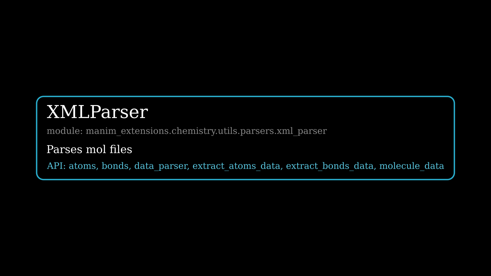
from manim import * from manim_extensions.chemistry.utils.parsers.xml_parser import XMLParser XMLParserTarget = XMLParser class XMLParserOverview(Scene): def construct(self): public = [n for n in dir(XMLParserTarget) if not n.startswith("_")] card = VGroup( Text('XMLParser', font_size=36), Text('module: manim_extensions.chemistry.utils.parsers.xml_parser', font_size=18, color=GREY), Text('Parses mol files', font_size=22), Text("API: " + ", ".join(public[:6]), font_size=18, color=BLUE), ).arrange(DOWN, aligned_edge=LEFT, buff=0.25) card.scale_to_fit_width(11.5).move_to(ORIGIN) frame = RoundedRectangle( width=12.1, height=card.height + 0.5, corner_radius=0.2, color=BLUE_D ).move_to(card) self.add(frame, card)
In [21]:
from pprint import pprint parsed_xml = XMLParser(filename="acetone_2d.xml") pprint(parsed_xml.atoms_data)
Out[21]:
{1: {'coords': array([0., 0., 0.]), 'element': 'C'}, 2: {'coords': array([1.2, 0.4, 0.3]), 'element': 'O'}}In [22]:
pprint(parsed_xml.bonds_data)
Out[22]:
{0: {'bond_type': 2, 'from_atom_index': 1, 'to_atom_index': 2}, 1: {'bond_type': 1, 'from_atom_index': 1, 'to_atom_index': 3}}- static data_parser(data)[source]¶
Parses the atoms and bonds data and returns a tuple of dictionaries with each data. Currently only PubChem xml files are supported.
The atom data follows the structure:
{<atom_index>: {"element": <atom_element>, "position": [<x_pos>, <y_pos>, <z_pos>]}}
The bond data follows the structure:
{<bond_index>: {"from_atom_index": <from_atom_index>, "to_atom_index": <to_atom_index>, "bond_type": <bond_type>}}
- Parameters:
data (
str) – String with the XML file data as returned byread_file().- Return type:
- Returns:
(atoms_data, bonds_data)tuple of dictionaries.
- static parse_molecule_data(molecule_data)[source]¶
Parse a single molecule entry into atoms and bonds dicts.
- manim_extensions.chemistry.mol_parser(file)[source]¶
Read a .mol file from disk and return parsed
(atoms, bonds).
- manim_extensions.chemistry.mol_parser_string(mol_string)[source]¶
Parse a MOL-format string (list of lines) into atoms and bonds dicts.
- manim_extensions.chemistry.mol_to_graph(file, language='ENG')[source]¶
Parse a .mol file into a simple graph representation (atoms + bonds).
Unlike
mol_parser(), this function stores atom positions under the"position"key and uses(atom1, atom2)tuples as bond keys, which is more convenient for graph traversal.
- manim_extensions.chemistry.sdf_parser(file)[source]¶
Read an .sdf file from disk and return a list of
(atoms, bonds)tuples.
- manim_extensions.chemistry.sdf_parser_string(sdf_string)[source]¶
Parse an SDF-format string into a list of
(atoms, bonds)tuples.SDF files can contain multiple molecules separated by
$$$$delimiters.
Vendoring status: manim-Chemistry
Vendored copy: synced at
c03147d4f9374cd75b58257962210e9020895d15.Currently vendored upstream commit: c03147d (2026-09-11).
Upstream data cached on 2026-11-26 13:58 (UTC+8).
Latest upstream release:
0.5.1(2026-04-30).The vendored copy is up to date with upstream.
Original author: UMDQ
Source repository: GitHub
License: MIT
manim-Chemistry is a chemistry visualisation toolkit for Manim. It
provides periodic-table elements, 2-D / 3-D molecule rendering, Bohr atoms,
orbital diagrams, and a PubChem API client for fetching molecular data.
The code is bundled inside manim_extensions as the
chemistry subpackage.
Features¶
Element– chemical element data model (symbol, name, atomic number, mass, colour, etc.).PeriodicTable– full periodic-table layout as a Manim mobject.MMoleculeObject– 2-D molecule from a file or SMILES string.GraphMolecule– graph-based molecule representation usingnetworkx.ThreeDMolecule– interactive 3-D molecule viewer.BohrAtom– Bohr atomic model animation.Orbital– atomic orbital visualisation.Molecule– unified facade that loads molecules from files, strings, or PubChem.PubchemAPIManager– PubChem REST API client.
Usage¶
The toolkit pairs Manim with chemical data files (.mol, .sdf,
.json, .asnt and .xml) plus a small set of useful classes. By
design it avoids third-party chemistry libraries such as RDKit, Mendeleev,
PyMOL, or Open Babel to keep maintenance light; PubChem is the only bundled
external data source, and users may still combine the toolkit with those
libraries on their own.
2-D molecules¶
Build a 2-D molecule from a .mol file with
AbstractMolecule.molecule_from_file():
Example: TwoDMoleculeScene ¶
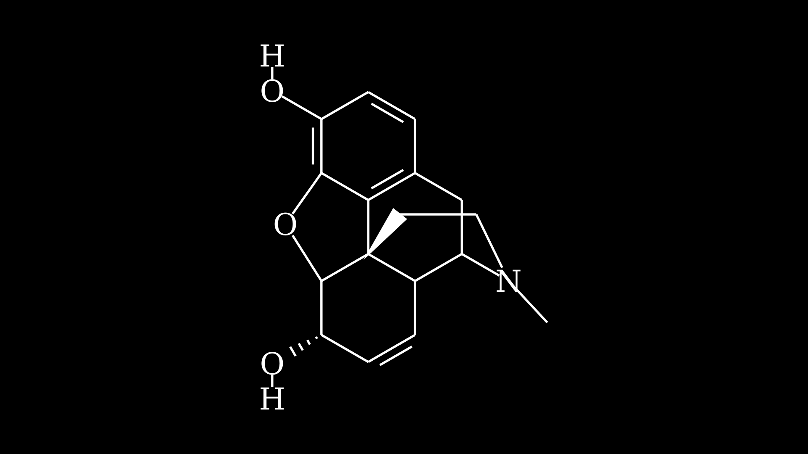
from manim import *
from manim_extensions.chemistry import MMoleculeObject
class TwoDMoleculeScene(Scene):
def construct(self):
morphine = MMoleculeObject.molecule_from_file("morphine_2d.mol")
self.add(morphine)
Double bonds can land on the wrong side after parsing. Pass
add_bonds_numbering=True to overlay the bond numbering given by the
.mol file (the numbering is the file’s own, not the chemical structure),
then rotate the offending bonds by index with rotate_bonds=[7, 20].
Hydrogens bonded to carbon are hidden by default; pass
ignore_hydrogens=False to keep them, or ignore_all_hydrogens=True to
drop every hydrogen.
Attach a name to a molecule with
NamedMolecule, which groups
the diagram with a title text:
named_molecule = NamedMolecule.from_mol_file(
name="Morphine", filename="morphine_2d.mol")
Graph molecules¶
GraphMolecule is
built on Manim’s Graph (and thus on networkx), so substructures can be
selected and animated. Load one from a file and add element or numeric atom
labels:
Example: GraphMoleculeScene ¶
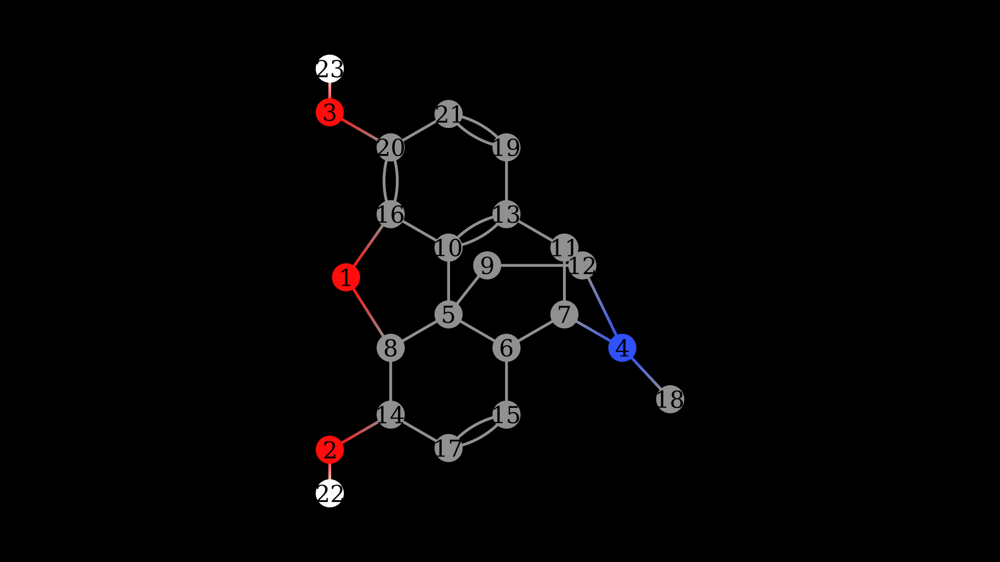
from manim import *
from manim_extensions.chemistry import GraphMolecule
class GraphMoleculeScene(Scene):
def construct(self):
graph_molecule = GraphMolecule.molecule_from_file(
"morphine_2d.mol", label=True, numeric_label=True)
self.add(graph_molecule)
Select the atoms and bonds between two atom indices with
get_connected_atoms_and_bonds()
and recolor or rotate that part with
GMAnimationBuilder:
molecule = GraphMolecule.molecule_from_file(
"dimethylpropane.mol", label=True, numeric_label=True)
atoms_and_bonds = molecule.get_connected_atoms_and_bonds(1, 3)
animation_builder = GMAnimationBuilder(
molecule=molecule, atoms=atoms_and_bonds[0],
bonds=atoms_and_bonds[1])
self.play(animation_builder.rotate_atoms_about_bond(1, 3))
self.play(animation_builder.change_color(
atoms_color=BLUE, bonds_color=RED, label_color=PINK))
3-D molecules¶
ThreeDMolecule
renders with the OpenGL renderer. Besides a molecule file it needs a CSV with
per-element data; the expected columns are AtomicNumber, Name,
Symbol, AtomicMass and Color. Build it with
ThreeDMolecule.from_mol_file(filename, source_csv) and render the scene
with --renderer=opengl (or config.renderer = "opengl").
Periodic table¶
Draw a single element frame from a CSV data file:
carbon = MElementObject.from_csv_file_data(
filename="Elementos.csv", atomic_number=6)
Compose the whole periodic table, using CPK coloring:
self.add(PeriodicTable(data_file="Elementos.csv"))
Atomic orbitals¶
Only atomic orbitals are supported (molecular orbitals are out of scope).
Select the l and m quantum numbers; render with the OpenGL renderer:
orbital = Orbital(l=1, m=-1)
Bohr diagrams¶
Set the numbers of electrons, protons, and neutrons:
diagram = BohrAtom(e=14, p=14, n=10)
Loading molecules from PubChem¶
Fetch a molecule straight from PubChem by cid, name, smiles or
inchi with
molecule_from_pubchem():
molecule = GraphMolecule.molecule_from_pubchem(name="morphine")
Pass three_d=True to obtain 3-D data (render with the OpenGL renderer).
Parsing and position helpers¶
The low-level parsers
mol_parser_string(),
mol_parser,
sdf_parser_string() and
sdf_parser return raw
atom/bond data; MMoleculeObject
also exposes from_mol_string / from_sdf_string classmethods for loading
directly from strings, and multiple_molecules_from_file for files holding
several molecules.
For layout work, molecule objects expose
find_atom_position_by_index, find_atoms_position_by_index,
find_all_atoms_positions, find_bond_center_by_index,
find_bonds_center_by_index and find_all_bonds_centers to retrieve
atom and bond coordinates.
See the upstream documentation for the reference manual and further quickstart examples.
Command-line interface¶
The chemistry subpackage ships a small command-line client for downloading molecule files from PubChem. See cli for the full guide with examples of every option.
Chemical element data — atomic number, mass, colour and other properties — plus module-level constants.
Modules¶
Bohr atom model for Manim. |
|
CLI module for chemistry. |
|
Chemical element representations for Manim. |
|
Future chemistry classes. |
|
Manim chemistry molecule classes. |
|
|
|
|
|
Periodic table visualization for Manim. |
|
3D chemistry visualizations for Manim. |
|
2D chemistry visualizations for Manim. |
|
Utility functions and parsers for chemistry. |
Type Aliases¶
- type manim_extensions.chemistry.utils.parsers.base_parser.FilePath = str | bytes | os.PathLike[str] | os.PathLike[bytes]¶
Path-like value accepted by the parsers: a string, raw bytes or a PathLike.
- type manim_extensions.chemistry.utils.parsers.base_parser.AtomsDict = dict[int, dict[str, object]]¶
Parsed atoms data:
{atom_index: {property: value}}.
- type manim_extensions.chemistry.utils.parsers.base_parser.BondsDict = dict[int, dict[str, object]]¶
Parsed bonds data:
{bond_index: {property: value}}.
Constants¶
- manim_extensions.chemistry.manim_chemistry_molecule.mc_element.MC_ELEMENT_DICT¶
class:~manim_extensions.chemistry.manim_chemistry_molecule.mc_element.MCElement.
- Type:
Mapping from element symbol to the corresponding
- manim_extensions.chemistry.MC_ELEMENT_DICT
- manim_extensions.chemistry.manim_chemistry_molecule.MC_ELEMENT_DICT